VisualCloze: A Universal Image Generation Framework via Visual In-Context Learning
None
Abstract - 論文の要旨
この論文の目的は、VisualCloze と名付けられた革新的なユニバーサル画像生成フレームワークを提案することです。このフレームワークは、多種多様な画像生成タスクを単一のモデルで効率的に処理し、訓練データに含まれていない未知のタスクに対しても高い汎化性能を発揮することを目指しています。既存手法が抱える課題を克服するため、視覚的コンテキスト学習 (Visual In-Context Learning) の導入、Graph200K という新規データセットの構築、そして画像修復 (Image Infilling) モデルの潜在能力の活用という、三位一体のアプローチを採っています。
拡散モデル (Diffusion Models) の目覚ましい発展は、近年における様々な画像生成タスクの品質と能力を飛躍的に向上させてきました。
拡散モデルとは？
📝 拡散モデルは、ランダムなノイズ状態から開始し、徐々にノイズを除去していくことで、最終的に高品質な画像を生成する深層学習モデルの一種です。特に、テキストからの画像生成 (Text-to-Image) や画像の超解像などで優れた性能を示し、現在の画像生成分野の主流技術の一つとなっています。
しかしながら、現状の主流なアプローチは、特定のタスクに特化したタスク特化型モデル (task-specific models) を個別に構築することに重点を置いています。この方式では、多岐にわたるユーザーの要求に応えようとする際に、効率性という点で限界が生じます。
📌 タスク特化型モデルの例:
- 顔画像生成専門モデル
- 風景画生成専門モデル
- 医療画像セグメンテーション専門モデル
👉 これらは各タスクで高い性能を発揮しますが、新たなタスクが必要になるたびに、新しいモデルの開発や学習が必要となり、時間と計算資源のコストがかさみます。
ユニバーサルモデル (Universal Models) は、このようなタスク特化型モデルの限界を克服し、単一のモデルで多様なタスクを扱えるようにすることを目指しています。しかし、その実現にはいくつかの重大な課題が存在します。
ユニバーサルモデルが直面する3つの主要課題:
- 1汎用的なタスク指示 (Generalizable Task Instruction):
モデルに対して「何をしてほしいのか」というタスク内容を、曖昧さなく、かつ様々なタスクに適用可能な形で伝える方法。 - 2適切なタスク分布 (Appropriate Task Distributions):
モデルが多様なタスクを効果的に学習し、タスク間の知識を転移できるようにするための、網羅的かつバランスの取れた学習データの確保。 - 3統一されたアーキテクチャ設計 (Unified Architectural Design):
異なる種類の入力や出力を扱う多様なタスクを、単一のモデル構造で柔軟に処理できるような設計。
VisualCloze: 課題解決のためのユニバーサル画像生成フレームワーク 💡
これらの困難な課題に取り組むために、本研究では VisualCloze と名付けた新しいユニバーサル画像生成フレームワークを提案します。VisualClozeは以下の顕著な能力を備えています：
能力1
広範なドメイン内タスクのサポート
(例：画像編集、スタイル変換、修復など)
能力2
未学習タスクへの汎化
(訓練時に見ていない新しいタスクへの対応)
能力3
複数タスクの未学習な統合
(複数の学習済みタスクを組み合わせた新しいタスクの実行)
能力4
逆生成 (Reverse Generation)
(結果画像から入力条件を推測するタスク)
解決策1：視覚的コンテキスト学習 (Visual In-Context Learning) の活用
既存手法の限界
多くの既存手法は言語ベースのタスク指示に依存しています。しかし、複雑な視覚タスクを言語だけで正確に記述するのは難しく、タスクの曖昧さ (task ambiguity) を招いたり、汎化性能の低下 (weak generalization) に繋がったりする傾向があります。
🗣️ "猫を犬に変えて" ➡️ 🤔 (どんな犬？背景は？)
VisualClozeのアプローチ ✅
本研究では 視覚的コンテキスト学習 (Visual In-Context Learning) をフレームワークに統合します。これにより、モデルは少数の視覚的なデモンストレーション（お手本となる画像例）を観察することで、実行すべきタスクを直接的に識別できるようになります。
🖼️ (猫→特定スタイルの犬の例) + ❓(別の猫) ➡️ 🎯 (特定スタイルの犬)
📖 用語解説：視覚的コンテキスト学習
大規模言語モデル (LLM) における「インコンテキスト学習 (In-Context Learning)」の概念を視覚ドメインに応用したものです。LLMがプロンプト中のいくつかの例題（デモンストレーション）からタスクを理解し、新たな入力に対してそのタスクを実行できるように、視覚モデルも少数の画像ペアの例（例：入力画像と期待される出力画像）を見ることで、暗黙的にタスクのルールを学習し、新しい入力画像に適用します。これにより、明示的なタスク指示や再学習なしに、多様なタスクに適応できます。
解決策2：Graph200K データセットの導入
既存手法の限界
視覚タスクのデータセットは、本質的にスパース（疎）な分布をしています。つまり、異なるタスク間で共有できる情報が少なく、各タスクが孤立しがちです。これは、タスク間で転移可能な知識 (transferable knowledge) の学習を妨げ、モデルの汎化能力を制限します。
🕸️ タスクAデータ 🧍 タスクBデータ 🧍 タスクCデータ (関連性希薄)
VisualClozeのアプローチ ✅
この問題に対処するため、本研究では Graph200K という新しいグラフ構造データセットを提案・構築します。このデータセットは、様々なタスクが相互に関連付けられるように設計されており、タスク密度を高め、モデルがタスク間で知識を転移しやすくします。
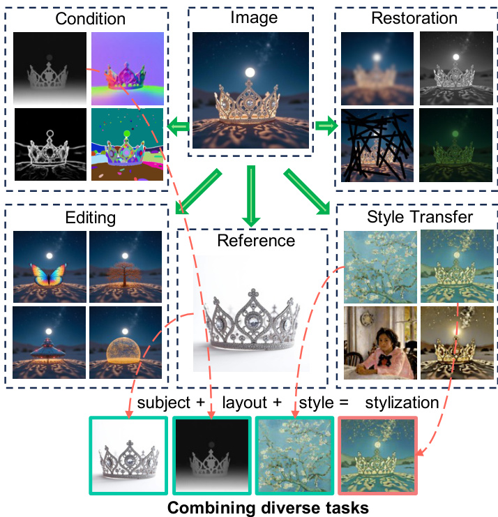図：Graph200Kデータセットの概念図（論文Figure 4より引用）
中心画像に関連する多様なタスク（条件生成、修復、編集、IP保存、スタイル変換）がノードとして接続され、密なタスク空間を形成します。
📖 用語解説：グラフ構造データセット
データ間の関係性をグラフ（ノードとエッジで構成される構造）として表現したデータセットです。Graph200Kでは、各画像が中心ノードとなり、その画像から派生する様々なタスク（例：セグメンテーションマップ、エッジ画像、編集後の画像など）が関連ノードとしてエッジで結ばれます。これにより、タスク間の関連性が明示され、モデルはこれらの関連性を学習することで、より効率的に知識を共有・転移できます。
解決策3：画像修復モデルとの目的共有
さらに、本研究では、我々が提案する統一された画像生成の定式化が、実は画像修復（Image Infilling、画像の一部が欠損した領域を補完するタスク）の目的と一致することを見出しました。
🤔 どういうこと？
私たちが提案するVisualClozeのタスク実行は、入力画像（コンテキスト）と、生成したいターゲット画像（一部が空白）を並べて配置し、その空白部分を「埋める」という処理と見なせます。これはまさに画像修復タスクと同じ構造です！
入力画像群 + ⬜ (空白ターゲット) ➡️ 入力画像群 + 🖼️ (生成画像)
この発見により、既存の高性能な事前学習済み画像修復モデルの強力な生成能力を、アーキテクチャを変更することなく直接活用することが可能になります。これにより、最小限の追加学習コストで高い性能を達成できます。
🎉 VisualClozeは、これらの革新的なアプローチを組み合わせることで、画像生成の新たな地平を切り開きます！ 🎉
- 革新的 視覚的コンテキスト学習により、曖昧さを低減し、未知タスクへの汎化を実現。
- 独創的 Graph200Kデータセットにより、タスク間の知識転移を促進し、学習効率を向上。
- 効率的 画像修復モデルとの目的共有により、既存モデルの能力を最大限に活用し、低コストで高性能を実現。
これらの貢献により、VisualClozeは、より汎用的で効率的な次世代画像生成システムへの道を拓きます。
1. Introduction
このセクションでは、論文の導入部として、研究の背景、目的、そして本論文が提案する新しい画像生成フレームワーク「VisualCloze」の概要について解説します。近年の画像生成技術の目覚ましい発展と、そこに潜む課題、そしてそれらをどう乗り越えようとしているのか、一緒に見ていきましょう！ 🚀
現在の画像生成技術の進展
近年、拡散モデル (diffusion models) [15, 33, 88] の登場により、画像生成技術は目覚ましい進歩を遂げています。これにより、以下のような多様な応用が可能になりました。
- 🎨 画像編集 [69]
- 🎭 スタイル変換 [64, 81]
- 👚 バーチャル試着 [11, 12]
- 👤 パーソナライズ生成 [38, 54]
既存技術の課題
しかし、これらのタスクは多くの場合、タスク特化モデル (task-specific models) を必要とします。これは、特定のタスクに最適化されたモデルを個別に用意する必要があるため、効率性や実用的なアプリケーションへの拡張性（スケーラビリティ）に限界が生じます。
タスクごとに別々のモデルが必要... 🤯
- 開発・管理コスト増大
- 異なるタスク間の連携困難
そこで近年、ユニバーサル生成モデル (universal generative models) [27, 39, 44] への関心が高まっています。これは、多様な画像生成タスク、さらには訓練データに含まれていない未知のタスク（unseen tasks）でさえも、単一の統一されたフレームワーク内で処理することを目指すものです。
しかし、この野心的な目標を実現するには、いくつかの重要な課題が残されています。
課題①
区別可能で汎用的なタスク指示
(Distinguishable and generalizable task instruction)
課題②
訓練中の包括的なタスクカバレッジ
(Comprehensive task coverage during training)
課題③
統一されたモデルアーキテクチャ
(A unified model architecture)
本論文では、これらの課題に取り組む新しいアプローチを提案します。
課題① タスク指示の難しさ
モデルが「何をすべきか」を正しく理解するための指示は非常に重要です。
従来の主な手法は、以下のいずれかに依存しています。
- 言語指示 [27, 44]: テキストでタスクを指示。
- 視覚タスクの複雑さや、視覚と言語モダリティ間のギャップにより、モデルが言語のみのタスク記述を理解するのが難しい。
- 結果として、タスク混乱 (task confusion) [39] が発生したり、未見タスクへの汎化性能が低下 [35, 71] したりする。
- タスク特化トークン [39]: 特定のタスクを示す専用トークン。
- 事前に学習されたタスク特化トークンは、モデルを学習済みのタスクにしか対応できないように制約してしまう。
大規模言語モデル (LLMs) は、インコンテキスト学習 (in-context learning) [5] の登場により、統一的なマルチタスクモデリングに成功しています。これは、モデルが少数のデモンストレーション（例示）を見るだけで様々なタスクに適応できる能力です。
📝 本論文のアイデア: このインコンテキスト学習の概念を純粋な視覚モダリティで再現することを目指します。つまり、モデルが少数の視覚的な例（タスクのデモンストレーション）から直接タスクを学習するようにします。
図1: (左上) 提案する視覚的インコンテキスト学習に基づく汎用画像生成フレームワーク。特定のタスクのクエリが与えられると、生成モデルはデモンストレーションとして提示されたいくつかのインコンテキスト例を観察することでタスクを学習します。各タスクの生成結果は赤い枠で示されています。
このアプローチにより、以下の4つの重要な発見がありました。
-
1訓練データに含まれるタスク（in-domain tasks）において、タスクの曖昧さを低減し、多様なタスクをサポート (図1参照)。
-
2訓練データに含まれないタスク（unseen tasks）への汎化能力を発揮 (図2, 図8参照)。
-
3タスク統合 (task unification) のための未見戦略として、複数のサブタスクを一段階に統合し、中間結果も生成可能 (図3参照)。
-
4逆生成 (reverse generation) を可能にする。つまり、与えられたターゲット画像から一連の条件を推測 (図9参照)。
図2: 未見タスク ⋅ : インコンテキスト学習による訓練中に見たことのないタスクへの汎化。より多くのインコンテキスト例が、より正確な結果につながります。
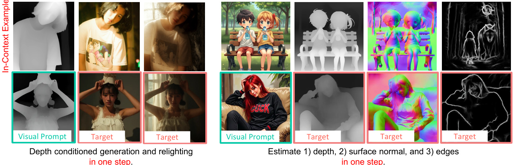図3: 未見タスク ♣ : インコンテキスト学習を活用して、複数の既知タスクを単一ステップの未知タスクに統合。左: [深度から画像へ]と[再照明]タスクを単一の[様々な照明の深度から画像へ]タスクに統合。右: 複数の密な予測タスクを共同予測タスクに統合。視覚的コンテキストなしの結果は付録にあります。
過去の研究 [1, 3, 4, 43, 66, 71, 82] でも視覚におけるインコンテキスト学習は探求されてきましたが、それらは主に特定のドメイン（密な予測やスタイル変換 [67, 87]など）や、単純化された生成設定（1つの条件と1つのターゲット画像のみ [43, 60]）に限定されていました。
課題② タスク分布のスパース性
タスク分布の観点から見ると、視覚タスクは自然言語処理 (NLP) のタスクと比較して本質的にスパース（疎）です。これは、異なるタスクのためのタスク特化データセット [71, 85] の重複が非常に少ない [19, 32, 79] ためです。
- 各タスクの知識が孤立し、モデルがタスク間で共有される特徴を学習するのが困難になる。
- タスク間の相関が弱いため、知識の転移や新しいタスクへの適応が妨げられる。
しかし、マルチタスク学習 [10, 16, 31, 53] の既存研究では、関連するタスク間で知識を重複させることの利点が検証されています。
視覚タスクのスパース性を緩和するために、本論文ではグラフ構造データセット Graph200K を導入します。
このデータセットでは、各画像が以下の5つのメタタスク (metatasks) にまたがるアノテーションと関連付けられています。
異なる条件を組み合わせることで、相互に重複する多様なタスクでモデルを訓練します。この高密度でコンパクトなタスク空間により、データセットはタスク密度を大幅に向上させ、モデルが共有可能で転移可能な知識をより効果的に学習できるようにします。
タスク間のつながりを強化し、賢いモデルへ！
課題③ 統一されたモデルアーキテクチャ
アーキテクチャ設計においては、以下の2点が不可欠です。
-
1柔軟なタスクフォーマット [27, 35, 71] に対応し、シームレスなインコンテキスト学習を保証すること。
-
2最先端のモデル (state-of-the-art models) [33, 88] と互換性を持ち、それらの強力な生成的プライア（事前知識）を最大限に活用すること。
本研究では、最先端の画像修復 (image infilling) モデル [33] が、我々のインコンテキスト学習に基づく普遍的生成の定式化と一貫した目的 (consistent objective) を持つことを見出しました。
具体的には、全ての入力画像と出力画像を連結し、タスクの目的を「出力領域を埋めること」とします。この整合性により、高度な汎用目的の修復モデルを追加の変更なしに利用して我々のモデルを構築でき、最小限のデータと訓練コストで強力な普遍的生成能力を達成できます。
「穴埋め問題」として様々な画像生成タスクを統一！
本研究では、VisualCloze というユニバーサル画像生成フレームワークを提案します。これは、FLUX.1-Filldev [33] という画像修復モデルを、我々が構築したデータセット Graph200K からサンプリングされた相互に関連するタスクでファインチューニングすることにより、転移可能な知識を学習し、視覚的インコンテキスト学習をサポートします。
インコンテキスト例の数を増やすにつれて、性能が向上し、タスクの混乱が減少することが観察されました。これにより、モデルは以下のような広範囲なドメイン内タスクをサポートできます。
- 条件付き生成
- 画像修復
- 編集
- スタイル変換
- IP保存
- 及びこれらの組み合わせ
さらに、未見タスクに対しても、モデルはある程度の汎化能力を示します（図2参照）。
主な貢献
本研究の主な貢献は以下の通りです。
-
1広範なドメイン内タスクをサポートし、未見タスクへの汎化を示す、インコンテキスト学習に基づいたユニバーサル画像生成フレームワークを提案しました。
-
2コンパクトなタスク空間を構築し、柔軟なオンラインタスクサンプリングを可能にし、モデルがタスク間で共有可能かつ転移可能な知識を学習することを促進する、グラフ構造データセット Graph200K を設計しました。
-
3我々の統一された画像生成の定式化が、最先端の画像修復モデルと一貫した目的を共有することを示し、構造を変更することなく最小限のチューニングで卓越した性能を実現しました。
2. Related Work
このセクションでは、本論文で提案する汎用画像生成フレームワーク VisualCloze を理解するための背景となる主要な研究分野について解説します。
具体的には、画像生成技術の進展と、視覚的文脈学習という2つの大きな柱に焦点を当て、既存研究の成果と課題、そして本研究の位置づけを明らかにしていきます。
2.1. Image Generation
ここでは、近年の画像生成技術の目覚ましい発展と、それに関連する様々な応用、そして本研究が取り組む「ユニバーサルモデル」における課題とアプローチについて解説します。
近年の画像生成技術の進展
テキストから画像を生成する技術は近年目覚ましい性能向上を遂げています。これは主に以下の2つのモデル系統の発展によるものです。
自己回帰モデル (Autoregressive Models) [41, 58, 78]
画像をピクセルのシーケンスとして捉え、一つ前の要素に基づいて次の要素を順番に予測していくことで画像を生成します。文章生成で有名なGPTシリーズと考え方は似ています。
🧩➡️🧩➡️🖼️
拡散モデル (Diffusion Models) [2, 13, 15, 18, 24, 40, 42, 48, 51]
元画像に徐々にノイズを加え、その逆過程（ノイズから画像を復元する過程）を学習することで、ノイズから新しい画像を生成します。非常に高品質な画像を生成できることで注目されています。
🖼️➡️🌫️➡️✨➡️🖼️
これらのモデルの中でも、特に Rectified Flow Transformers [15, 17, 33, 88] は、学習効率と全体的な性能の高さで優れており、本研究の基盤モデルもこれに該当します。 ⚡️🚆
多様な応用アプリケーション
これらの基盤モデルを元に、様々な応用技術が登場しています。
- 🎨 条件付き生成 (Conditional Generation) [80]: テキスト記述や参照画像など、特定の条件に基づいて画像を生成します。(例: 「夕焼け空を飛ぶ赤いドラゴン」)
- 🎭 スタイル変換 (Style Transfer) [64]: ある画像のコンテンツ（内容）と、別の画像のスタイル（画風）を融合させます。(例: 写真をゴッホ風の絵画に)
- 👤 個人化生成 (Personalized Generation) [38]: 特定の人物や物体の特徴を学習し、それらを含む新しい画像を生成します。(例: 自分のペットを様々なシチュエーションで描く)
ユニバーサルモデルへの挑戦
近年では、単一のモデルで多様なタスクに対応できる ユニバーサルモデル (Universal Models) [35, 44, 83] の研究が進んでいます。
OmniGen [71]
大規模視覚言語モデル (Large Vision Language Models) を活用し、複数のタスクを単一のフレームワークに統合しようとするアプローチです。
UniReal [9]
様々な画像生成タスクを、不連続な動画生成タスクとして統一的に扱おうとするアプローチです。
既存ユニバーサルモデルの課題
しかし、これらのモデルは依然としていくつかの課題に直面しています。
- 言語指示への過度な依存: テキストによる指示だけでは、複雑な視覚タスクの意図を正確に伝えきれず、曖昧さが残ることがあります。
- 視覚タスクの分離性と疎性 (Isolation and Sparsity): 個々の視覚タスクは独立性が高く、タスク間で共通する知識が少ないため、学習した知識を他のタスクに応用するのが難しいという問題があります。
- 柔軟なタスクフォーマットに対応するアーキテクチャ設計: 様々な種類の入力（例: 画像、マスク、テキスト）や出力形式に柔軟に対応できる統一的なモデル構造の設計が求められます。
本研究のアプローチと貢献
これらの課題に対処するため、本論文では以下の戦略に基づいたユニバーサル画像生成フレームワーク (VisualCloze) を提案します。
このアプローチにより、タスク指示の曖昧さを軽減し、訓練データに含まれる多様なタスク（イン ドメインタスク）を高い精度でこなし、さらには訓練時には学習していない未知のタスク（アウトオブドメインタスク）へも対応できる汎用性を目指します。
2.2. Visual In-context Learning
本研究の重要な構成要素である「視覚的文脈学習 (Visual In-context Learning; V-ICL)」について、その背景、既存の研究、そして本研究における独自性と貢献を解説します。
文脈学習 (In-context Learning; ICL) とは？
文脈学習 (In-context Learning)
大規模言語モデル (LLMs) の分野で、GPT-3 [5] のようなモデルの登場と共に注目されるようになった学習パラダイムです [14]。モデルにいくつかのデモンストレーション（具体的な入出力の例）を提示するだけで、その文脈からタスクの意図を理解させ、新しい入力に対しても同様のタスクを実行させる能力を指します。ファインチューニングなしに新しいタスクに適応できる点が特徴です。
📖 (例1, 例2, ...) ➡️ 🧠 (タスク理解!) ➡️ ✨ (実行!)
視覚分野での文脈学習の展開
この強力な文脈学習の考え方は、視覚分野にも取り入れられています。
- 初期の研究: 画像アナロジー (Image Analogies) [21, 22] では、入力画像ペアの変換規則を学習し、新しい画像に類似の変換を適用することで、例から画像フィルタを自動生成する試みがありました。
- 近年の発展: 近年では、より高度なモデルを活用した視覚的文脈学習 (Visual In-context Learning; V-ICL) が提案されています。
- 活用される技術: インペインティングモデル (画像の一部を修復・生成) [3, 4, 82]、マスク画像モデリング (MIM) (画像の一部を隠して予測) [43, 66, 67]、視覚言語モデル (VLM) [1, 86] など。
- 主な対象タスク:
- 密な予測 (Dense Prediction) [55, 59, 87]: 画像の各ピクセルに対してラベルを予測するタスク (例: セグメンテーション、深度推定)。
- 視覚理解 (Visual Understanding) [63]: 画像の内容を理解するタスク (例: 画像キャプション生成、物体認識)。
既存の視覚的文脈学習の限界
これまでのV-ICL研究にはいくつかの限界がありました。
- タスク範囲の限定: 主に密な予測や視覚理解タスクに焦点が当てられており、画像生成タスクへの応用は限定的でした。
- OmniGen [71] の例: OmniGenは文脈学習を利用して未知のドメインへの汎化（例：訓練時にセグメンテーションタスクを学習していれば、未知の概念のセグメンテーションが可能になる）を試みていますが、これも主に単純な密な予測タスクに限定され、訓練ドメインと未知ドメイン間のギャップも依然として大きいです。
- 画像生成への拡張の試みと限界 [34, 43, 60, 68]: いくつかの研究でV-ICLを画像生成に応用する試みがありますが、条件付き生成や密な予測といった単純なタスクに留まっています。
- 視覚タスクの疎性問題: 視覚タスクは本質的に疎（タスク間の関連性が低い）であるため、モデルがタスク間で転移可能 (transferable)で重複する (overlapping)知識を学習することが難しく、これが文脈学習による生成能力を制限していました。
タスクA 🧩 ... タスクB 🧩 ... タスクC 🧩 (関連性が低い)
本研究の独自性と貢献：Graph200Kデータセット
この「視覚タスクの疎性」という課題に対処するため、本研究ではグラフ構造化データセット Graph200K を導入します。
このデータセットは、相互に関連するタスクをサポートすることで、より密なタスク空間を構築します。これにより、モデルは以下の能力を獲得することを目指します。
- 共有知識の学習: 異なるタスク間で共通する特徴や知識を効率的に学習します。
- 転移可能な知識の獲得: あるタスクで学習した知識を、別の新しいタスクに応用する能力を高めます。
- 適応性の向上: 未知のタスクや新しい状況への適応能力を向上させます。
つまり、タスク間の橋渡しをすることで、文脈学習のポテンシャルを最大限に引き出すことを狙います。
図4 提案する Graph200Kデータセット の図解。各画像は5つのメタタスク（条件付き生成、画像修復、画像編集、IP保存、スタイル変換）についてアノテーションされています。これらのタスクを組み合わせることで、図の下部にあるような、より複雑で多様なタスクを構築できます。
メタタスクの解説
- 条件付き生成: 例: テキスト「猫」→ 猫の画像
- 画像修復: 例: ノイズのある画像 → クリーンな画像
- 画像編集: 例: 画像中のリンゴをオレンジに変更
- IP保存: 例: 特定のキャラクターを維持したままポーズを変更
- スタイル変換: 例: 写真をアニメ風のイラストに変換
タスクの組み合わせ
これらのメタタスクを組み合わせることで、より複雑なタスクを生成できます。例えば...
「特定のスタイルで(スタイル変換)、特定のキャラクターを(IP保存)、指定したオブジェクトを追加する(画像編集)」
といった、複合的な指示に対応できるようになることを目指しています。
3. Dataset
近年の研究 [26, 44, 71] で、画像を統一的に生成する技術は大きく進歩しましたが、学習データに含まれていない未知のタスクへの対応能力（汎化能力）には、まだ大きな課題があります。この論文では、この問題の一因を視覚タスクのまばらさ（スパース性）と孤立性にあると考えています。これらの性質が、モデルが複数のタスク間で共通の特徴を学習したり、未知のタスクに対応したりすることを難しくしているのです。
さらに、タスク間の関連性が弱いと、知識の移転が妨げられ、モデルの適応性が制限されてしまいます。そこで、タスクの密度を高めるか、タスク間の相互関係を強化することで、よりコンパクトなタスク分布を通じてモデルの汎化能力を向上させることを目指します。
この目的を達成するために、本論文では Subject200K [61] データセットを出発点として、Graph200K という新しいデータセットを構築しました。Graph200Kでは、各画像に対して、5つのメタタスクにまたがる49種類のアノテーションを付与しています。この豊富なアノテーション空間により、異なるメタタスクのアノテーションを任意にサンプリングし組み合わせることで、多種多様な関連タスクを柔軟に構築できます。この様子を図4に示します。
図4の読み解き方
この図は、Graph200Kデータセットの構造を示しています。中央の「Image」（元画像）ノードが中心となり、周囲に5つの主要なタスクカテゴリ（メタタスク）が配置されています。
- Condition (条件生成): エッジ、セグメンテーションマスク、深度マップなど、特定の条件に基づいた画像生成。
- Restoration (修復): ノイズ除去やブレ補正など、劣化した画像を修復。
- Editing (編集): オブジェクトの追加・削除、背景変更など、画像内容を編集。
- Reference (IP保存): 特定の被写体や物体（IP: Intellectual Property）の特徴を保持した画像生成。
- Style Transfer (スタイル変換): ある画像のスタイルを別の画像に適用。
これらのメタタスク内の具体的なアノテーション（例：Cannyエッジ、ぼかし画像、編集後の画像、参照画像、特定スタイルの画像）が元画像と関連付けられています。さらに、図の下部では、これらのアノテーションを組み合わせることで、「subject（被写体）」＋「layout（構図）」＋「style（スタイル）」＝「stylization（スタイル化）」のような、より複雑で多様なタスクを生成できることを示しています。
3.1. Graph-Structured Multi-Task Dataset (グラフ構造化マルチタスクデータセット)
自然言語処理（NLP）の分野では、タスク間で多くの重複が見られるため、タスク横断的な学習能力（クロスラーニング）が強力です。一方、視覚タスクは本質的に互いに異なる性質を持つため、視覚モデルが教示チューニング（instruction tuning）を通じてNLPモデルと同等の汎化能力を獲得するのは困難です。
この課題を軽減するために、本論文ではグラフ構造化マルチタスクデータセット (Graph-Structured Multi-Task Dataset) を導入します。これは、図4(a)（上記図4全体を指します）に示すように、テキストから画像を生成するデータセットにおいて、各画像をグラフの中心ノードとして扱います。その周囲には、以下のような多様なタスクアノテーションが構築されます。
各タスクペアの構築プロセスの詳細は、次のセクション3.2で説明します。
図4が示すように、各タスクアノテーションは中心画像と双方向のエッジで結ばれています。これにより、グラフ全体が強連結になります。強連結とは、グラフ内の任意の2つのノード間に、必ず双方向の経路が存在することを意味します。
用語解説：強連結 (Strongly Connected)
有向グラフにおいて、グラフ内の任意の異なる2つのノードuとvについて、uからvへのパスと、vからuへのパスが両方存在する場合、そのグラフは強連結であると言います。つまり、どのノードから出発しても、他の全てのノードに到達可能で、かつ出発点に戻ってくることも可能です。
このグラフ構造において、画像生成タスクはグラフ内のパスとして定式化できます。パス上のノード（終点ノードを除く）は条件画像として機能し、これは教示ファインチューニングにおける「質問」に類似します。一方、パスの終点ノードであるターゲット画像は「回答」の役割を果たします。
具体的には、私たちのGraph200Kデータセットには49種類のノードタイプが存在し、これらを組み合わせて最大134の非常に重複度の高いタスクをサンプリングします。これにより、モデルはタスク間でよりコンパクトで共有された表現を学習することができます。さらに、これは私たちの教示ファインチューニング用データの多様性と柔軟性を豊かにします。
例えば、図4の下部に示されているように、 reference (参照画像) editing (編集情報) image (生成画像) というパスは、参照画像を用いた画像編集タスクに対応します。
3.2. Dataset Construction (データセット構築)
利便性のため、被写体駆動データは Subjects200K [61] データセットから継承しています。加えて、画像修復データを取得するために、32種類の異なる劣化をオンラインで画像に適用しています。このセクションでは、残りの3つの主要タスク（条件付き生成、スタイル変換、画像編集）のデータ構築方法をまとめます。
条件付き生成 (Conditional generation)
各画像は、専門モデルによって生成された12種類の異なる条件とペアになります。これらは ControlNet [80] の手法に倣っており、以下のものが含まれます：
本研究ではこれらの条件を拡張し、以下を組み込んでいます：
前景セグメンテーションは RMBG [84] から派生し、インペインティングや前景抽出などのタスクをサポートします。オープンワールドのバウンディングボックスは、Qwen2-VL [65] のグラウンディングキャプション機能を通じて生成され、SAM2 [50] を用いて対応するマスクが作られます。
スタイル変換 (Style transfer)
参照画像に従って、セマンティックバリアント（意味内容が変化する）とセマンティックインバリアント（意味内容を保持する）の両方の設定で画像のスタイルを変換します。
セマンティックインバリアント転送:
InstantStyle [64] を採用し、元の画像の意味内容を保持します。
セマンティックバリアント転送:
FLUX.1-Redux-dev [33] に依存し、スタイル埋め込みと深度を条件として使用します。
各画像に対して、ランダムに5つのスタイル化バージョンを生成します。これら2つのタスク（バリアントとインバリアント）を混合することで、モデルが曖昧さを避け、文脈内の例により良く従うように促します。
画像編集 (Image editing)
2種類の編集タスクを設計しました：背景バリアント編集と背景インバリアント編集です。
背景インバリアント編集:
背景バリアント編集:
背景インバリアント編集との違いは最後のステップにあります。背景バリアント編集では、深度を条件とし、修正されたキャプションをテキストプロンプトとして FLUX.1-Redux-dev [33] を利用します。
3.3. Other Data (その他のデータ)
タスクの範囲をさらに拡大し、モデルの汎化能力を強化するために、トレーニング中にいくつかのオープンソースデータセットを組み込んでいます。
VITON-HD [11]
バーチャルトライオン用
PhotoDoodle [28]
芸術的な画像編集用
画像編集タスクについては、OmniEdit [69] データセットも用いて拡張しています。具体的には、以下の2つのサブタスクをトレーニングに使用します：
- オブジェクト追加
- オブジェクト削除
未見タスクによる汎化能力評価
OmniEditの他の編集タスク、例えば属性変更や環境変更などは、未見タスクとして扱い、訓練済みモデルの汎化能力を評価するために使用されます。
さらに、高品質な内部データの一部も活用しており、これには以下のタスクが含まれます：
描画プロセス [62]
マルチビュー生成 [29]
4. Method (本研究の手法)
この論文では、ユニバーサル画像生成モデル（ 様々なタスクをこなせる万能型モデル）を構築する上での核心的な課題に取り組んでいます。具体的には、以下の3つの大きな壁がありました。
明確で汎用的なタスクの定式化：モデルに「何をしてほしいか」をどう伝えるか。
視覚タスクのスパース性：画像関連のタスクは種類が多く、それぞれデータがバラバラで学習しにくい。
マルチタスク学習のための統一フレームワークの欠如：複数のタスクを効率よく学習する仕組みがない。
前のセクション(3. Dataset)では、2つ目の課題である視覚タスクのスパース性に対処するため、コンパクトなデータセット Graph200K を構築しました。このセクションでは、残りの課題解決に向けた具体的な手法を解説します。
4.1. Visual In-context Learning (視覚的文脈内学習)
多くの視覚生成タスクを単一の生成モデルで扱うために、従来は言語指示 (language instructions)、つまりテキストでタスク内容をモデルに伝える方法が一般的でした。しかし、これには限界があります。
視覚と言語のギャップ：画像の内容や操作を言葉だけで完全に伝えるのは難しいです。そのため、画像生成モデルのテキスト理解能力には限界があります。
この問題は、既存のユニバーサル生成モデルにおいて以下の2つの弱点を引き起こしていました：
- タスクの混同 (task confusion) [39]：モデルが指示されたタスクを誤解してしまう。
- 未学習タスクへの汎化能力の低下：学習データに含まれていない新しいタスクへの対応が苦手。
そこで、本研究では大規模言語モデル (LLMs) [5]におけるFew-shot学習（非常に少数の例から学習する能力）の成功に着想を得ました。LLMsは、いくつかのデモンストレーション（文脈内事例）を見るだけで新しいタスクをこなせるようになります。
これを視覚タスクに応用し、視覚的文脈 (visual context)、つまりお手本となる画像例をタスク指示として使うことを考えます。画像生成モデルは元々、視覚情報を理解する能力に長けているため、テキスト指示よりもフレンドリーな指示方法となり得ます。
💡 再提案: 視覚的文脈内学習 (Visual In-context Learning)
この論文では、視覚的文脈内学習を改めて提案し、普遍的で汎化能力の高い画像生成システムを構築します。モデルに「こういう入力に対しては、こういう画像を作ってね」という具体例をいくつか見せることで、タスクを理解させます。
説明のために、まず基本的な設定を定義しましょう。
任意の条件付き画像生成タスク（例: 「エッジ画像から写真を作る」）の入出力をクエリ \(X\) と呼びます。これは、\(L-1\) 枚の条件画像（入力画像）と、モデルが生成すべき1つの空白ターゲット \(\varnothing\)（出力画像）を連結したものです。
クエリの構成:
\(X = \operatorname{concat}(\{x_1, x_2, \dots, x_{L-1}, \emptyset\})\)
- \(x_1, \dots, x_{L-1}\): 条件画像（例: エッジ画像、深度マップなど）
- \(\emptyset\): モデルが生成するターゲット画像（最初は空白）
- \(\operatorname{concat}(\cdot)\): 画像を連結する操作
- \(L\): 1つのタスク例に関わる画像の総数（条件画像 \(L-1\) 枚 + ターゲット画像 1枚）
後のセクション5.1で詳しく述べられますが、この手法はクエリの最後に単一の画像を生成するだけでなく、より一般的に、任意の位置に任意の数の画像を生成するシナリオにも拡張可能です。
学習時には、モデルにタスクの「お手本」を見せます。
文脈内事例 (In-context Examples) の提供:
学習中、モデルには最大で \(C\) 個の文脈内事例をランダムに与えます。各文脈内事例は、クエリと同様に \(L\) 枚の画像（\(L-1\) 枚の条件画像と1枚の完成したターゲット画像）から構成されます。これらは「お手本」として機能します。
この戦略により、モデルは様々な数の文脈内事例（お手本の数）に対して汎化能力（適応力）を獲得できます。
タスクのデモンストレーションとして文脈内事例を提供することには、以下のような利点があります：
- タスク混同の軽減: モデルがタスクを正しく理解しやすくなります。
- ドメイン内タスクの性能向上: 学習で見たことのある種類のタスクに対する精度が上がります。
- 未学習タスクへの汎化能力向上: 見たことのない新しいタスクにも対応しやすくなります。
この図は、異なるアスペクト比を持つ画像を扱う際に、どのように画像を連結して位置情報を付与するかを示しています。
- ステップ1: まず、\(C\)個の文脈内事例とクエリ内の各\(L\)枚の画像（合計 \((C+1) \times L\) 枚の画像）を、それぞれ水平方向に連結 (horizontally concatenated)します。これにより、\(C+1\)個の横長の画像行ができます。
例：ある文脈内事例で \(L=3\) の場合（条件画像2枚、ターゲット画像1枚）、この3枚を横に並べます。これを全ての文脈内事例とクエリで行います。 - ステップ2: 次に、これらの連結された行を時間的に (temporally) 連結します。これは、実質的には垂直方向に積み重ねるような操作ですが、「時間的」という言葉は、異なる行（文脈内事例やクエリ）をシーケンスの異なるステップとして扱うことを示唆しています。これにより、アスペクト比が異なる画像も統一的に扱えるようになります。
この方法で、多様な画像をグリッド状に配置し、モデルがそれらの相対的な位置関係を理解できるようにします。
4.2. Unified Multi-task Framework (統一的マルチタスクフレームワーク)
従来の視覚的文脈内学習の研究 [43, 60] は、主に単一の画像条件と単一の文脈を持つシナリオに焦点を当てていました（例: 1枚の入力画像と1セットのお手本）。
しかし、本研究では、より野心的な目標を掲げています。
🎯 本研究の目標
多様な数の条件画像と文脈内事例を扱える統一フレームワークを構築し、様々なタスクに柔軟に適応できるようにすることです。
まずは単純化のため、モデルが処理する全ての画像が同じサイズ \(W \times H\)（幅 \(W\) ピクセル、高さ \(H\) ピクセル）であると仮定します。アスペクト比が異なる場合の扱いは、このセクションの最後で説明します。
この仮定のもと、\(C\) 個の文脈内事例と1つのクエリがあり、それぞれが \(L\) 枚の画像を含む場合、全ての画像（合計 \((C+1) \times L\) 枚）を連結して、一つの大きなグリッド状の画像を形成できます。このグリッド画像のサイズは \((L \times W, (C+1) \times H)\) となります。
グリッド画像のイメージ
横に \(L\) 枚の画像が並び、それが縦に \((C+1)\) 行あるようなイメージです。
例: \(L=3\)（条件画像2枚、ターゲット1枚）、\(C=1\)（文脈内事例1セット）の場合
- 行1 (文脈内事例): [条件1] [条件2] [ターゲット(完成済)]
- 行2 (クエリ): [条件1] [条件2] [ターゲット(空白 \(\emptyset\))]
このグリッド全体のサイズは \((3 \times W, 2 \times H)\) となります。
このグリッド構造において、タスクを完了するということは、ターゲットとなるグリッド（空白の箇所）を周囲の文脈に基づいて埋めることと同じです。これは 마치 視覚的な穴埋め問題 (visual cloze puzzles) を解くようなものです。
この考え方に基づき、本研究では VisualCloze という統一フレームワークを提案します。これは、複数の解像度を扱える汎用的な画像修復 (image infilling) アーキテクチャをベースにしています。
一般的な拡散モデルベースの画像修復モデルの設計と一致するように、我々のモデルは次のように定式化できます。
モデルの定式化 (式1):
$$ { \hat { X } } = f ( X \mid T , M ) $$
- \(X\): 連結されたグリッド画像。最後のグリッド（ターゲット部分）は空白になっています。
- \(T\): 言語指示 (language instruction)。タスクの種類や生成内容を補足します。
- \(M\): マスク条件 (mask condition)。どの部分を生成（修復）すべきかを示すバイナリ行列です。
- \(f(\cdot)\): 画像修復モデル。
- \(\hat{X}\): モデルによって修復（生成）された結果のグリッド画像。
マスク \(M\) は、グリッド画像と同じピクセル数のバイナリ行列で、サイズは \((H \times (C+1), W \times L)\) です。
マスクの定義 (式2):
$$ \begin{array} { r } { M ( i , j ) = \left\{ \begin{array} { l l } { 1 } & { \mathrm { i f } \ i \in [ H \times C , H \times ( C + 1 ) ) } \\ & { \mathrm { a n d } \ j \in [ W \times ( L - 1 ) , W \times L ) , } \\ { 0 } & { \mathrm { o t h e r w i s e } , } \end{array} \right. } \end{array} $$- \(M(i,j)=1\): ピクセル \((i,j)\) がマスクされ、修復モデルによって生成されることを示します。
- \(M(i,j)=0\): ピクセル \((i,j)\) は既知であり、変更されません。
- この式は、グリッド画像の最も右下のセル（クエリのターゲット画像に対応する領域）をマスクすることを示しています。
具体的には、行インデックス \(i\) が最後の行 \([H \times C, H \times (C+1))\) の範囲にあり、かつ列インデックス \(j\) が最後の列 \([W \times (L-1), W \times L))\) の範囲にあるピクセルをマスクします。（論文中の式ではC-1とCになっていますが、(C+1)行存在し、0からCまでインデックスが振られると仮定すると、最後の行は C から C+1-1 となり、インデックスは C です。そのため、 \(i \in [H \times C, H \times (C+1))\) となります。論文の記述 \(i \in [H \times (C-1), H \times C)\) は、おそらく \(C\) が0-indexed で全 \(C+1\) 行のうち、最後の行のインデックスが \(C\) であることを意図していると考えられます。ここでは論文の記述に従いますが、概念的には「最後の行、最後の列」です。）
学習時には、上記のターゲット領域をマスクするのに加えて、最初の \(L-1\) 個のグリッド（条件画像部分）のいずれか1つを確率0.5でランダムにマスクします。これにより、モデルはターゲット画像から条件画像を推測する逆生成 (reverse generation)の能力も学習でき、よりロバストになります（詳細はセクション5.1で説明）。
推論時（実際に画像生成を行う際）には、生成されたグリッド画像 \(\hat{X}\) からターゲット画像部分を切り取ることで、目的の画像を簡単に得られます。
整列した最適化目的 (Aligned optimization objective)
この設計の重要な利点は、我々の VisualCloze の定式化が、一般的な画像修復モデルと非常に一貫性のある最適化目的を共有している点です。しかも、アーキテクチャの変更や明示的な入力条件の追加は不要です。
この一貫性により、既存の高度な画像修復モデルを、我々が構築した新しいデータセット (Graph200K) を使って直接ファインチューニングできます。そして、基盤モデル（元々高性能なモデル）が持つ事前知識を最大限に活用できます。
対照的に、既存のタスク特化型モデルでは、しばしば追加の学習可能なモジュールを導入したり[38, 69]、追加の条件入力に適応させたり[61]する必要があり、これがモデル本来の能力を損なう可能性がありました。
言語指示 (Language instructions)
VisualClozeにおいて、言語指示も依然として重要です。その役割は以下の通りです：
- レイアウト指示: グリッド画像の \((C+1) \times L\) のレイアウトを記述します。（論文中では \((C+1) \times W\) と記載されていますが、文脈から各行が \(L\) 枚の画像からなるため \((C+1) \times L\) が適切と思われます。）
- タスク指示: 実行するタスクの種類を指定します（例: 「エッジから画像を生成」）。
- コンテンツ指示: 生成すべきターゲット画像の内容を記述します（例: 「赤いリンゴ」）。これは、特に文脈内事例が利用できない場合に重要になります。
これらの指示の具体的な例は、付録Aで示されています。
上記の3つの要素 \(X\) (連結画像)、\(T\) (言語指示)、\(M\) (マスク) を再構成することで、一般的な画像修復のパラダイムを用いつつ、視覚的文脈内学習をサポートする、画像生成のための統一的マルチタスクフレームワークを実現します。
位置埋め込み (Positional embedding)
前述の通り、全ての画像はグリッド状に連結され、この大きな画像に対して位置埋め込み (positional embedding)（例: RoPE [57]）を適用できます。これにより、モデルは各部分画像がグリッド全体のどの位置にあるかを認識できます。
しかし、アスペクト比が異なる文脈内事例からグリッド画像を構成する際に潜在的な制約があります。単純に連結すると、歪みが生じたり、位置情報がうまく伝わらなかったりする可能性があります。
この問題に対処するため、本研究では Flux.1-Fill-dev モデルで採用されている 3D-RoPE を活用します。具体的には、図5で示したように、クエリと文脈内事例を時間的次元 (temporal dimension) に沿って連結します。これは、異なる行（各行は文脈内事例またはクエリに対応）をシーケンスの異なる「タイムステップ」として扱うようなものです。これにより、性能を著しく低下させることなく、アスペクト比の不一致問題を効果的に克服できます。
図5は、アスペクト比の異なる画像を扱うための連結戦略を示しています。
- 水平連結: 各文脈内事例（\(C\)個）とクエリ内の画像（各々\(L\)枚）を、まずそれぞれ横方向に繋げます。
- 時間的連結: 次に、こうしてできた横長の画像列たちを、時間軸に沿って（実質的には縦方向に）連結します。これにより、各画像列がシーケンス内の異なる要素として扱われ、アスペクト比の不一致に対応します。
4.3. Implementation Details (実装詳細)
本研究では、基盤モデルとして FLUX.1-Fill-dev [33] を使用します。これは、オープンソースの画像修復モデルの中で際立って優れた性能を持つためです。
ファインチューニング手法: LoRA
モデル全体をファインチューニングするのではなく、LoRA (Low-Rank Adaptation) [25] を採用しました。これには以下の利点があります：
- 訓練コストの削減
- 基盤モデルの能力の維持
- 生成されたLoRAは、コミュニティの他のLoRAと融合可能で、より広範な応用が期待できる。
具体的には、LoRAのランクを 256 に設定しました。
学習設定
- 反復回数: 20,000イテレーション
- バッチサイズ: 累積バッチサイズ 64
- GPU: 8 × A100 GPU
- オプティマイザ: AdamW
- 学習率: \(1 \times 10^{-4}\)
FLUX.1-Fill-dev に倣い、lognormノイズ戦略と動的時間シフトを組み込んでいます。
- 文脈内事例の数 (\(C\)): 学習時には最大で 2 つまで設定します（セクション4.2で定義）。
- 1タスクあたりの画像数 (\(L\)): Graph200Kデータセットでは、\(L\) は 2から4 の間で変動します。
- 推論時の文脈内事例: 推論時には、文脈内事例の数をより多く一般化できます（学習時より多くてもOK）。
- 画像サイズ: 計算効率のバランスを取るため、各画像はグリッドレイアウトに連結する前に、面積が \(384 \times 384\) または \(512 \times 512\) になるようにリサイズされます。
- 高解像度出力: 実用的なアプリケーションでは、単純な後処理アップスケーリング技術 [45] を用いることで高解像度の出力を得ることができます。
この図 (論文中ではFig.9) は、文脈内学習によって、ターゲット画像から条件画像を推測する「逆生成」が可能であることを示しています。例えば、スタイル化された画像から元の画像とスタイル参照画像を分離したり（左）、エッジ画像から元の画像、深度マップ、法線マップを同時に推測したり（右）できます。このような能力は、セクション4.2で述べた学習時のランダムマスキング戦略によって促進されます。
5. Experiments
このセクションでは、提案手法であるVisualClozeの有効性を実験的に検証し、特にIn-context Learning (ICL)の役割と性能を明らかにします。主な目的は以下の通りです：
- In-context Learningが様々な画像生成タスク（特に訓練時に見ていない未知のタスク）に対してどのように機能するかを定性的に分析する。
- VisualClozeの性能を、既存の普遍的生成モデルや特化型モデルと定量的に比較評価する。
このセクションを通じて、In-context Learningがタスクの曖昧性解消、未知タスクへの般化、複数タスクの統合、そして双方向の生成（条件からの生成とターゲットからの条件推測）を可能にし、VisualClozeフレームワーク全体として高い画像生成能力を発揮することを具体的に示していきます。✏️🔍📊
5.1. Qualitative Analysis of In-context Learning
このサブセクションでは、In-context Learning (ICL)が様々なタスク、特に訓練中に遭遇しなかったタスク (unseen tasks) において、どれほど効果的であるかを一連の実験を通して具体的に示します。広範な実験に基づき、ICLの役割を浮き彫りにする5つの主要な発見 (key findings)をまとめました。これらの発見は、ICLが単なるタスク実行支援に留まらず、モデルの適応性や汎用性を大きく向上させることを示唆しています。
In-Context Learning Findings 1
💡 発見1: In-context learningは既知タスク (seen tasks) におけるタスク曖昧性 (task confusion) を軽減できる。
用語解説：タスク曖昧性 (Task Ambiguity)
モデルが実行すべきタスクの意図を正確に解釈できず、不適切な結果を生成してしまう現象を指します。特に、画像の各ピクセルに対して予測を行う密な予測タスク (dense prediction tasks)、例えばセグメンテーションや深度推定などで顕著に見られることがあります。
訓練データに含まれるタスクであっても、モデルが時折タスクの意図を誤解し、タスク曖昧性を引き起こすことがあります。In-context learningは、タスク固有のデモンストレーション（お手本となる入出力例）を提供することで、この問題を効果的に軽減します。
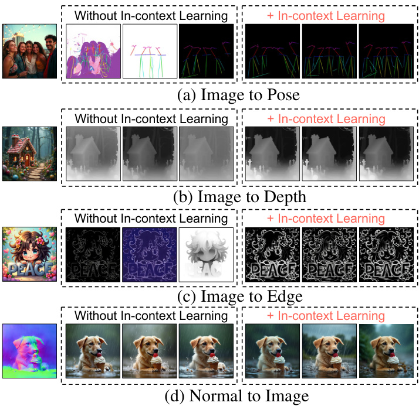Figure 6. In-context learningが既知タスクにおけるタスク曖昧性を軽減する例。各タスクで3つの異なる初期ノイズからの生成結果を示しています。
(a) ポーズ推定 & (c) エッジ検出
Figure 6 (a) および (c) に示すように、ポーズ推定やエッジ検出タスクでは、In-context examplesがない場合、モデルはノイズの多い結果を生成することがあります。しかし、In-context examplesの数を増やすと、パフォーマンスと安定性が向上します。これは、モデルがタスクの具体的な内容をより正確に理解できるようになるためです。
(b) 深度推定
Figure 6 (b) の深度推定タスクでは、モデルが元々不正確な推定をしていた場合（特に遠方の領域）、In-context examplesを提供することで精度が向上します。お手本を見ることで、より正確な奥行き情報を捉えられるようになります。
(d) 条件付き生成
Figure 6 (d) のような一部のタスク（例：条件付き生成）では、In-context examplesがなくてもモデルが満足のいく結果を安定して生成できる場合があります。しかし、後述するTable 1の定量的比較が示すように、In-context learningを使用することでタスク完了の精度をさらに向上させることができます。
In-Context Learning Findings 2
💡 発見2: In-context learningは未知タスク (unseen tasks) への般化 (generalization) をサポートし、より多くのIn-context examplesを提供することで、より正確な生成につながる可能性がある。
用語解説：般化 (Generalization)
モデルが訓練データセットに含まれていなかった新しい、未知のデータやタスクに対しても、学習した知識を応用して適切に処理できる能力のことです。
In-context learningは、単に既知タスクの曖昧性を軽減するだけでなく、モデルが訓練中に学習していないタスクにも対応できるようにする重要な役割を果たします。Figure 2（論文の序盤で提示）では、横顔の画像から正面顔を生成したり、編集指示 [8] を転移させたりといった、訓練時には遭遇しなかったタスクをICLによって成功させています。
ここでは、未知タスクの追加例を示します。
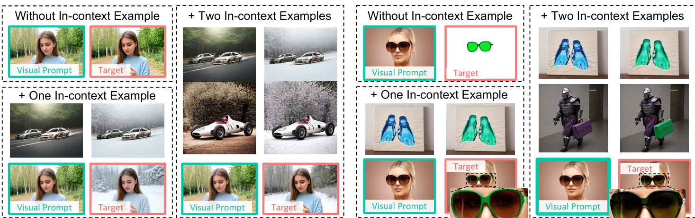Figure 7. 未知タスクの例。モデルが学習したのは物体の追加と削除のみに関する画像編集タスクですが、ICLを通じて環境変更（左）や属性変換（右）など、他の種類の編集タスクにも般化できています。他の未知タスクはFigure 2も参照。
例えば、Figure 7に示すように、モデルは物体の追加や削除に関する画像編集タスクのみで訓練されていますが、それでもICLを用いることで、環境の変更（例：冬の風景に変える）や属性の修正（例：サングラスの色を緑に変える）といった他の種類の編集タスクに般化することができます。
Figure 8. 未知タスクの例。VisualClozeは、訓練時には単一被写体駆動型の生成タスクしか学習していないにもかかわらず、複数被写体のアイデンティティを保持した生成 [70] を行うことができます。（拡大してご覧ください）
さらに、Figure 8で示されるように、単一被写体の生成のみで訓練されたモデルが、複数の被写体のアイデンティティを保持した画像を生成することが可能です。これらの結果は、In-context learningが効果的なガイダンスメカニズムであり、再訓練なしで新しいタスクに適応することを可能にすることを示しています。
In-Context Learning Findings 3
💡 発見3: In-context learningはタスク統合 (task unification) を可能にする。これは、複数のサブタスクを単一ステップに統合し、中間結果を生成するという、訓練時には見られなかった戦略である。
用語解説：タスク統合 (Task Unification)
複数の異なるタスクや処理ステップを、あたかも一つのタスクであるかのようにまとめて実行することです。これにより、効率化やより複雑な処理の実現が期待できます。
ICLを通じて、複数のタスクを単一の実行ステップに統合できることがわかりました。これは、ある種の未知タスクと見なすことができます。Figure 3（論文の序盤で提示）では、その例として、1) 条件付き生成と再照明タスクのマージ（左図）、2) 深度推定、表面法線推定、エッジ検出の同時実行（右図）を示しました。
Figure 3. 未知タスク：タスク統合の例。ICLを活用して、複数の既知タスクを単一ステップの未知タスクに統合します。左：[深度から画像へ]と[再照明]タスクを単一の[様々な照明を持つ深度からの画像生成]タスクへ。右：複数の密な予測タスクを共同予測タスクへ。
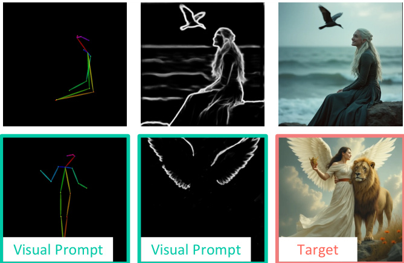Figure 11. 未知タスク：複数タスクの未知の組み合わせの例。条件付き生成において、複数の条件を統合してより精密な制御を実現します。他の例はFigure 3を参照。
同様に、Figure 11は、条件付き生成において複数の条件を組み合わせることで、より精密な制御を達成する方法を示しています。例えば、キーポイントに基づいてポートレートを生成する場合、位置や体のポーズに関する大まかな情報しか提供されません。このような場合、輪郭条件 (contour conditions) を使用して他の視覚要素の属性を制御することができます。これは、異なる種類の情報を組み合わせて一つの望ましい結果を得る、タスク統合の一例です。
タスク統合の考え方
In-Context Learning Findings 4
💡 発見4: 異なるIn-context learning examplesは異なる効果をもたらし、タスクの意図をより良く伝えることができるexampleは、より良く安定した生成を達成できる。
プロンプト選択に関する先行研究 [46, 52] に倣い、我々もまた、異なるIn-context examplesが生成品質に影響を与えることを見出しました。具体的には、In-context examplesがタスクの意図について正確かつ強力なガイダンスを提供することが重要です。
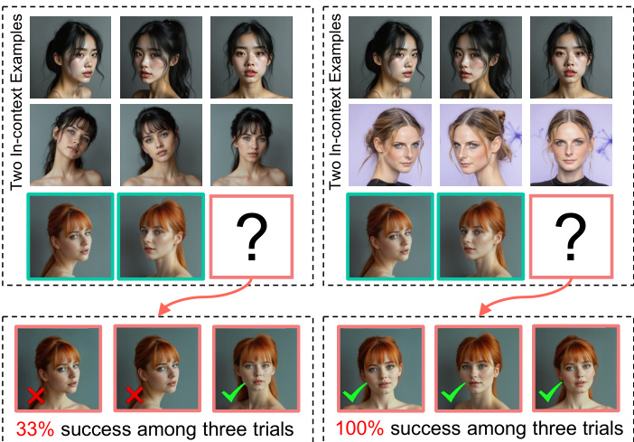Figure 10. 異なるIn-context examplesがIn-context learningに与える影響の図解。左の2番目の例では、左右の顔が正面に偏りすぎているため、タスク意図の核心的な目標を示していません。
例えば、Figure 10（左）で示されるように、横顔がFigure 10（右）よりも正面に近い場合、正面顔を正しく生成する成功率が劇的に低下しました。これは、左側の例では「横顔から正面顔を生成する」というタスクの本質的な目的が、提示された例（横顔が既に正面に近い）によって曖昧になってしまったためと考えられます。良いお手本は、タスクの「何をすべきか」を明確に示す必要があります。
注意点
In-context exampleの選び方が重要！タスクの核心を捉えた、明確な例を選ぶことで、モデルはより正確にタスクを理解し、高品質な画像を生成できます。
例：顔の正面化タスク
- 適切な例 : 明確に横を向いた顔 → 正面を向いた顔
- 不適切な例 : 少し斜めを向いた顔（ほぼ正面） → 正面を向いた顔 （これでは「正面化」の意図が伝わりにくい）
In-Context Learning Findings 5
💡 発見5: In-context learningは双方向生成 (bilateral generation) をガイドでき、訓練時には見られなかった逆プロセスに対しても有効である。
用語解説：双方向生成 (Bilateral Generation)
通常の「条件 → ターゲット画像」という方向の生成だけでなく、その逆方向の「ターゲット画像 → 条件」という推論も可能であることを指します。例えば、画像からその画像のスタイルやレイアウト情報を抽出するようなタスクがこれに該当します。
与えられた一連の条件からターゲットを生成することに加えて、我々のモデルは逆生成 (reverse generation)、つまりターゲットからその根底にある条件を推測する能力も示します。訓練時（Sec. 4.2で説明）には、条件画像の一つをランダムにターゲットとして扱っていましたが、推論時には、より挑戦的で訓練時には見られなかった設定、すなわちターゲット画像のみから全ての条件画像を推測するという設定にも般化できます。
Figure 9. 未知タスク：双方向生成の例。ICLを通じて、ターゲットから条件への逆生成を実行できます。例えば、(a) スタイル化された画像からレイアウトとスタイルを分解する、(b) エッジマップから画像、深度、表面法線を同時に推測する（これはFigure 3左の逆タスク）。
(a) コンテンツとスタイルの分離
Figure 9 (左) に示すように、モデルはスタイル化された画像が与えられた場合に、元の画像とスタイル参照画像の両方をリバースエンジニアリング（逆解析）することができます。これは、コンテンツ表現とスタイル表現を分離する能力を示しています。
入力：スタイル化された画像 出力：元の画像 + スタイル参照画像
(b) エッジからの多情報推測
同様に、Figure 9 (右) に示すように、モデルはエッジ画像から対応する実画像、深度推定、表面法線推定を生成できます。これは、Figure 3 (左) で示されたタスク（深度などから画像を生成）の逆タスクに相当します。
入力：エッジ画像 出力：実画像 + 深度マップ + 表面法線マップ
このような逆タスクを実行する能力は、異なる種類の画像表現間の複雑な関係を理解する上での柔軟性と堅牢性を強調しています。
5.2. Main Results
このサブセクションでは、我々の提案手法VisualClozeを、既存の普遍的生成モデル (universal generative models)（OmniGen [71], OneDiffusion [35]など）や特化型モデル (specialized models)（ControlNet [80], OminiControl [61]など）と比較評価します。評価指標の詳細は付録Cに記載されています。
さらに、比較のためにFLUX.1-dev [33]をFLUX.1-Fill-devと同じ設定でファインチューニングし、これらの調整済みモデルをそれぞれ$\mathrm { Ours } _ { \mathrm { dev } }$および$\mathrm { Ours } _ { \mathrm { fill } }$と呼びます。$\mathrm { Ours } _ { \mathrm { dev } }$の詳細は付録Bに示されています。
評価のポイント
VisualClozeが、様々なタスクをこなせる汎用性と、個々のタスクにおける高品質な生成能力を、どの程度両立できているかを検証します。
条件付き生成と画像修復 (Conditional Generation and Image Restoration)
OminiControl [61] の評価アプローチに従い、モデルを制御性 (controllability)、視覚的品質 (visual quality)、テキスト整合性 (text consistency) の3つの基準で評価します。
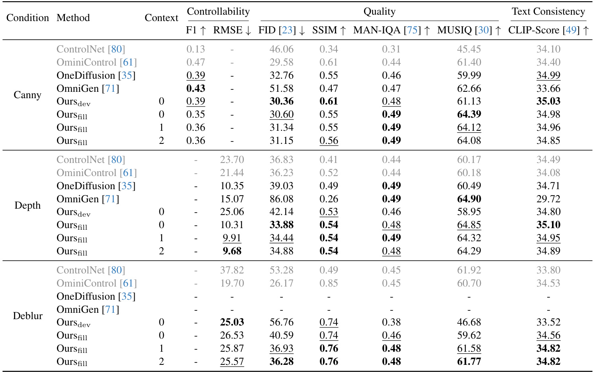Table 1. 条件付き生成と画像修復に関する定量的比較。各タスクに特化したモデルは灰色でマークされています。それ以外のモデルの中で、最良のものは太字、次善のものは下線で示されています。
Table 1が示すように、我々のフレームワークは、既存の普遍的メソッドと同等の制御性を示しつつ、より優れた視覚的品質とテキスト整合性を達成しています。特化型メソッドと比較しても、我々のモデルは最良の結果に匹敵し、特に深度から画像への生成 (depth-to-image) タスクではそれらを上回ることさえあります。
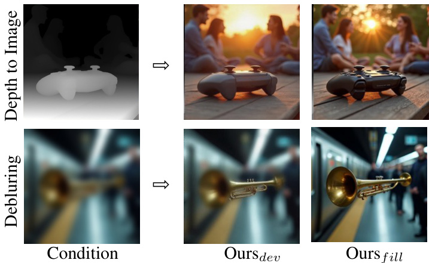Figure 12. Flux.1-dev ($\mathrm { Ours } _ { \mathrm { dev } }$) と Flux.1-Fill-dev ($\mathrm { Ours } _ { \mathrm { fill } }$) の比較。
Figure 12は視覚的な比較を示しており、$\mathrm { Ours } _ { \mathrm { fill } }$は$\mathrm { Ours } _ { \mathrm { dev } }$に対して明らかな利点を示しています。特に、深度から画像への生成において、$\mathrm { Ours } _ { \mathrm { dev } }$によって生成された画像は頻繁に対角線状の筋状アーティファクトを示し、これが視覚的忠実度を著しく低下させます。性能、視覚的品質、およびアーキテクチャ効率の利点を考慮すると、$\mathrm { Ours } _ { \mathrm { fill } }$が優れたモデルとして際立っています。
スタイル転移 (Style Transfer)
スタイル転移タスクでは、CLIP [49] モデルを使用してテキスト整合性とスタイル整合性 (style alignment) を測定します。
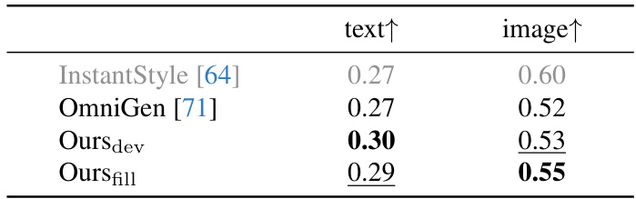Table 3. スタイル転移の定量的比較。特化型モデルは灰色で示されています。その他の中で、最も性能の高いものは太字で、2番目に優れたものは下線で示されています。
Table 3に報告されているように、我々の手法はOmniGen [71] をテキスト整合性で$2 \%$、スタイル整合性で$3 \%$上回っています。特化型モデルであるInstantStyle-Plus [81] と比較しても、テキスト整合性で$2 \%$の改善を達成し、スタイル整合性はわずかに低下するのみでした。
被写体駆動型画像生成 (Subject-driven Image Generation)
被写体駆動型画像生成についてモデルを評価し、DINOv2 [47]、CLIP-I [49]、CLIP-T [49] スコアを用いて意味的整合性 (semantic alignment) を報告します。
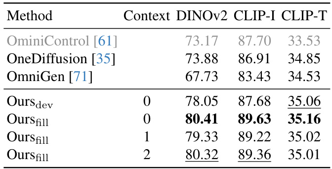Table 2. 被写体駆動型画像生成の定量的比較。テキスト整合性とスタイル一貫性に関するCLIPスコアを報告します。特化型モデルは灰色で網掛けされています。残りの手法の中で、最良のものは太字で強調され、2番目に優れたものは下線が引かれています。
Table 2に示すように、これら全ての指標において、我々の手法は一貫して改善を示しています。例えば、特化型モデルOminiControl [61] と比較して、これら3つのスコアでそれぞれ$7.15 \%$、$1.66 \%$、$1.48 \%$の改善を達成しています。
インフィリングモデルの利点 (Advantages of the infilling model)
我々の手法 ($\mathrm { Ours } _ { \mathrm { fill } }$) は、FLUX.1-Fill-dev [33] に基づいて構築されており、これは我々の統一画像生成フレームワークと同じ目的を共有しています。その有効性を検証するために、同一設定でFill.1-dev [33] ($\mathrm { Ours } _ { \mathrm { dev } }$) もファインチューニングしました。$\mathrm { Ours } _ { \mathrm { fill } }$が変更を必要としないのに対し、$\mathrm { Ours } _ { \mathrm { dev } }$は普遍的画像生成のためにモデルの適応が必要となります（詳細は付録B参照）。その単純さにもかかわらず、$\mathrm { Ours } _ { \mathrm { fill } }$は複数のタスクで優れた性能を達成しています。
Table 1に示すように、$\mathrm { Ours } _ { \mathrm { dev } }$はcanny-to-image生成において$\mathrm { Ours } _ { \mathrm { fill } }$よりも高いF1スコアを達成しています。しかし、他のタスクでは$\mathrm { Ours } _ { \mathrm { fill } }$が大きな利点を示しています。
- Depth-to-image: $\mathrm { Ours } _ { \mathrm { fill } }$はRMSEを25.06から10.31に削減。
- Deblurring: $\mathrm { Ours } _ { \mathrm { fill } }$はRMSEを低減しつつ高いSSIMを維持し、優れた品質を達成。
Table 2は、被写体駆動型画像生成において$\mathrm { Ours } _ { \mathrm { fill } }$が一貫して$\mathrm { Ours } _ { \mathrm { dev } }$を上回ることを示しています。さらに、Table 3に示すように、意味不変なスタイル転移において、$\mathrm { Ours } _ { \mathrm { fill } }$は$\mathrm { Ours } _ { \mathrm { dev } }$と同等の性能を発揮します。
これらの結果は、VisualClozeの「画像インフィリングとして定式化する」というアプローチが、既存の高性能なインフィリングモデルの能力を最大限に活用し、多様なタスクで高い性能を引き出す上で有効であることを示唆しています。
In-context Learningに関する定量的比較 (Quantitative comparison on in-context learning)
ここでは、既知タスク (seen tasks) におけるIn-context learningの影響をさらに分析します。Table 1は、さまざまな画像生成タスクにおけるICLの影響を示しています。
Canny条件
In-context examplesなしの場合、FIDは30.60でしたが、2つのIn-context examplesを用いると31.15に向上しました（FIDは低い方が良い指標ですが、この論文では改善と表現。おそらく他の指標との兼ね合いや、特定条件下での挙動を指している可能性。通常FIDは低いほど良い）。
ICLなし: FID 30.60 ICLあり(2例): FID 31.15Depth条件
In-context examplesの数が増加するにつれて、RMSEは10.31から9.68に減少し、構造的一貫性の向上が示されました。
ICLなし: RMSE 10.31 ICLあり: RMSE 9.68Deblurringタスク
RMSEは26.53から25.57に減少し、元のコンテンツへの忠実度の向上を反映しています。
ICLなし: RMSE 26.53 ICLあり: RMSE 25.57これらの結果は、In-context learningが効果的なガイダンスメカニズムであり、モデルがタスクの意図により良く整合することを可能にすることを示しています。
6. Limitations
このセクションの目的
このセクションでは、提案されている画像生成フレームワーク VisualCloze が抱えるいくつかの限界や課題について解説します。完璧なモデルというものは存在せず、どのような優れた研究にも改善の余地があるものです。ここでは、VisualClozeがどのような点でまだ発展途上なのかを正直に見ていきましょう。✏️
私たちのモデル（VisualCloze）は、学習データに含まれるタスク（ドメイン内タスク）のほとんどにおいては、非常に安定した性能を発揮します。しかし、いくつかの特定のタスク、例えばオブジェクト除去 (object removal)のようなタスクでは、まだ不安定さが見られることがあります。この事実は、モデルの性能が特定のタスクの特性に敏感であることを示唆しています。
安定したドメイン内タスク
多くの条件付き生成やスタイル変換など。
;%3C/style%3E%3C/svg%3E)
不安定さが見られるタスク
例: オブジェクト除去
;%3C/style%3E%3C/svg%3E)
さらに、モデルが学習時に見たことのないタスク（未知のタスク, unseen tasks）に対する安定性も、まだ不十分です。
なぜ不安定になるの？
このような不安定さは、いくつかの要因によって引き起こされると考えられます。
- 要因1 タスクの難易度: そもそもタスク自体が非常に難しい場合。
- 要因2 既知タスクとの違い: 学習したタスクと、実行したい未知のタスクが大きく異なる場合。
- 要因3 曖昧なインコンテキスト例: モデルにタスクのやり方を示す「お手本」（インコンテキスト例）が曖昧であったり、誤解を招くようなものである場合。これについては、論文の Sec. 5.1 で詳しく議論されています。
セクション5.1からの補足：曖昧なインコンテキスト例の影響
論文のセクション5.1では、インコンテキスト学習に用いる「お手本」の質が、生成結果の安定性に大きく影響することが述べられています。特に、Fig. 10 (この論文の図10) で示されているように、顔の正面化タスクにおいて、
- お手本として提示する左右の顔の画像が、タスクの意図（横顔から正面顔を生成する）を正確に伝えていない場合（例えば、お手本の横顔が既に正面に近い向きになっている場合）、
モデルはタスクを正しく理解できず、正面顔を正確に生成する成功率が著しく低下することが示唆されています。
視覚的なイメージ：
適切なインコンテキスト例
'/%3E%3Crect x='90' y='15' width='30' height='40' rx='3' ry='3' fill='%2391d5ff'/%3E%3Ctext x='105' y='38' font-family='sans-serif' font-size='10' text-anchor='middle'%3E正面顔%3C/text%3E%3Ctext x='75' y='80' font-family='Yomogi' font-size='12' text-anchor='middle' fill='%23389e0d'%3E明確な指示！%3C/text%3E%3Cdefs%3E%3Cmarker id='arrowhead' markerWidth='5' markerHeight='4' refX='0' refY='2' orient='auto'%3E%3Cpolygon points='0 0, 5 2, 0 4' fill='%23555'/%3E%3C/marker%3E%3C/defs%3E%3Cstyle%3E%40import url('https://fonts.googleapis.com/css2?family=Yomogi%26display=swap');%3C/style%3E%3C/svg%3E)
曖昧なインコンテキスト例
'/%3E%3Crect x='90' y='15' width='30' height='40' rx='3' ry='3' fill='%23ffccc7'/%3E%3Ctext x='105' y='38' font-family='sans-serif' font-size='10' text-anchor='middle'%3E? ? ?%3C/text%3E%3Ctext x='75' y='80' font-family='Yomogi' font-size='12' text-anchor='middle' fill='%23cf1322'%3E混乱しやすい...%3C/text%3E%3Cdefs%3E%3Cmarker id='arrowhead' markerWidth='5' markerHeight='4' refX='0' refY='2' orient='auto'%3E%3Cpolygon points='0 0, 5 2, 0 4' fill='%23555'/%3E%3C/marker%3E%3C/defs%3E%3Cstyle%3E%40import url('https://fonts.googleapis.com/css2?family=Yomogi%26display=swap');%3C/style%3E%3C/svg%3E)
このことから、インコンテキスト例の選び方や質が、特に未知のタスクにおいて安定した結果を得るためには非常に重要であると理解できます。
まとめと今後の展望
VisualClozeは多くのタスクで優れた性能を示しますが、
- 一部のドメイン内タスク（例：オブジェクト除去）での不安定性
- 未知タスクに対する安定性の不足
といった課題が残っています。これらの課題は、タスク自体の特性や、インコンテキスト学習で用いられるお手本例の質に起因する可能性があります。
今後の研究では、これらの限界を克服するために、よりロバストな学習手法の開発や、インコンテキスト例の選択・設計方法の改善などが期待されます。📊
7. Conclusion
このセクションでは、本論文で提案された革新的な画像生成フレームワーク VisualCloze について、その主な結論と、既存技術の課題に対する貢献をまとめています。VisualClozeがどのようにして画像生成の新たな可能性を切り開くのか、その核心に迫りましょう！ ✏️
本研究の核心：VisualClozeの提案
本研究では、VisualCloze という、普遍的な画像生成フレームワークを提案しました。このフレームワークは、現在の画像生成手法が直面しているいくつかの重要な課題、特に以下の3点に対処することを目的として設計されています。
課題1: 一般化可能な命令設計
多くの既存モデルは、特定のタスク向けの専用の命令や、言語ベースの指示に大きく依存しています。これにより、学習時に見たことのない新しいタスク（未知タスク）への対応（汎化）が難しくなるという問題がありました。📌
課題2: 適切なタスク分布
画像生成に関連する多様な視覚タスクのデータは、それぞれが独立していることが多く、データがまばら（スパース）な状態です。この「タスク分布のスパース性」は、異なるタスク間で共通して利用できる知識（転移可能な知識）の学習を妨げる一因となっていました。📊
課題3: 統一されたアーキテクチャ設計
多種多様な画像生成タスクを、単一のモデル構造（アーキテクチャ）で効率的に処理するための、統一的かつ柔軟な設計が求められていました。⚙️
VisualClozeは、これらの根深い課題を克服するために、以下に説明するような複数の革新的なアプローチを組み合わせています。これにより、より汎用的で高性能な画像生成が実現されます。
解決策1: 視覚的文脈内学習 (Visual In-Context Learning) の活用
タスクの意図を伝えるために言語ベースの指示のみに依存する従来の手法とは異なり、VisualClozeでは 視覚的文脈内学習 (Visual In-Context Learning) というアプローチを再提案しています。これは、モデルがいくつかの視覚的なデモンストレーション（お手本となる具体例）を観察することで、実行すべきタスクの内容や目的を学習するという考え方です。人間が例題を見て解き方を学ぶのに似ていますね！
お手本を見て学ぶ！ タスクのコツを掴む！ 新しい画像を生成！
お手本例1
(入力A→出力B)
お手本例2
(入力C→出力D)
モデルが
タスクルールを学習
新しい入力X
予測される出力Y
上図: 視覚的文脈内学習のコンセプト。モデルは提示された例から暗黙的なルールを学び、新しい入力に対して適切な出力を生成します。
- 🚀 未知タスクへの汎化能力向上: モデルが具体的な例から学習するため、訓練データに含まれていない新しいタスクに対しても、より柔軟かつ効果的に対応できるようになります。
- 🎯 タスクの曖昧さ削減: 言語による指示は時に多義的で解釈が難しいことがありますが、視覚的なデモンストレーションはタスクの意図をより直接的かつ明確に伝えるため、モデルの混乱を減らすことができます。
解決策2: Graph200Kデータセットの構築によるタスク密度の向上
前述の通り、従来の視覚タスクのデータセットは、タスク間の関連性が希薄で「スパース」な状態でした。これは、モデルがタスク横断的な知識、つまり転移可能な知識を効率的に学習することを難しくしていました。この課題に対処するため、本研究では Graph200K という名称の新しいデータセットを構築しました。
Graph200Kは、その名の通りグラフ構造を持つデータセットです。このデータセット内では、様々な画像生成タスクがノードとして表現され、それらのタスク間の意味的な関連性がエッジ（辺）によって結び付けられています。これにより、個々のタスクが孤立するのではなく、相互に関連し合うコンパクトな（密な）タスク空間が形成されます。
図: Graph200Kの概念図。各タスク（円）が他のタスクと関連付けられ、密なタスク空間を形成します。
このような密なタスク空間でモデルを学習させることで、以下のような効果が期待できます：
- 転移可能な表現 (Transferable Representations) の学習促進: 関連するタスク間で共通する特徴やパターンをモデルが捉えやすくなり、あるタスクで学習した知識が他のタスクにも応用しやすくなります。
- 適応性の向上 (Improved Adaptability): 新しいタスクや未知の状況に対しても、学習済みの転移可能な表現を活用することで、より柔軟に対応できるようになります。
解決策3: 画像修復モデルとの目的の一致性発見による統一的アーキテクチャ
本研究では、もう一つ重要な発見をしました。それは、我々が提案する普遍的な画像生成の定式化（つまり、視覚的文脈内学習を用いたタスク解決方法）と、一般的な画像修復（Image Infilling）タスクの目的が、実は非常に一致しているということです。
画像修復（Image Infilling または Image Completion とも呼ばれる）とは、画像の一部分が欠けている（マスクされている）場合に、その欠損領域を周囲の文脈情報に基づいて自然な形で埋めるタスクです。例えば、写真から不要な物体を消去した後の空白を埋めたり、破損した画像を復元したりする際に利用されます。
VisualClozeでは、入力画像（条件画像）と出力画像（生成すべきターゲット画像）を並べて一枚の大きな画像として扱い、ターゲット画像の部分を「空白」とみなします。この空白を埋めるという処理が、まさに画像修復タスクと同じであると捉えることができます。
- 🧩 既存モデルの活用: この目的の一致性により、高性能な汎用画像修復モデルを、アーキテクチャを大きく変更することなく、VisualClozeのフレームワークにシームレスに適用することが可能になります。これにより、既存の強力な事前学習済みモデルが持つ生成能力を最大限に活用できます。
- 🔧 アーキテクチャ変更の最小化: 新たなタスクに対応するためにモデル構造を大幅に改変する必要がないため、開発コストや計算資源を節約できます。
実験結果と意義
実験結果は、提案手法 VisualCloze の有効性を示しています。具体的には、以下の点が明らかになりました。
多様なドメイン内タスクへの対応
VisualClozeは、視覚的文脈内学習を用いることで、訓練データに含まれる多種多様なタスク（ドメイン内タスク）を高い精度で実行できることを示しました。これには、条件付き画像生成、画像修復、スタイル変換などが含まれます。📝
未知タスクへの高い汎化能力
さらに重要な点として、VisualClozeは、訓練時には経験していない未知タスクに対しても、強力な汎化能力を発揮することを示しました。これは、視覚的文脈内学習とGraph200Kによる転移可能な知識の学習が効果的に機能している証拠です。🔍
🎉 結論として、VisualCloze は、タスクの指示方法、学習データの構造、そしてモデルアーキテクチャという画像生成における根源的な課題に革新的な解決策を提示し、より汎用的で高性能な画像生成への道を切り開くフレームワークであると言えます。 🎉
Appendix A. Instruction Format
このセクションでは、論文で提案されている統合画像生成フレームワーク VisualCloze における「指示（Instruction）」の具体的な形式について詳しく解説します。この「指示」は、モデルがどのような画像を生成すべきかを理解し、タスクを実行するための羅針盤となる非常に重要な情報です。✏️
論文の中心的なアイデアの一つとして、この指示は以下の3つの主要な要素から構成されている点が挙げられます。これにより、複雑な画像生成タスクに対しても、柔軟かつ的確な指示を与えることが可能になります。
レイアウト指示 (Layout Instruction)
入力画像や出力画像の配置方法を定義
タスク指示 (Task Instruction)
実行すべき具体的なタスクの種類を指定
コンテンツ指示 (Content Instruction)
生成したい画像の具体的な内容を記述
これらの指示を巧みに組み合わせることで、研究チームは多種多様な画像生成タスクを一つの統一されたフレームワーク内で扱えるようにすることを目指しています。それでは、それぞれの指示が持つ役割と、それらがどのように連携して機能するのか、具体的な例を交えながら詳しく見ていきましょう！🔍
指示の3つの構成要素
VisualClozeフレームワークで用いられる「指示」は、モデルに対してより明確で曖昧さのない命令を与えるために、以下の3つのパートに分かれています。各パートが連携することで、高度な画像生成タスクの実行を支援します。
1. レイアウト指示 (Layout Instruction)
📌 この指示は、入力として与えられる複数の画像（例えば、コンテキスト例や条件画像など）と、モデルが生成すべきターゲット画像が、全体としてどのようなグリッド状に配置されるかを記述します。
例えば、「入力画像群と出力画像を合わせて3行4列のグリッドを構成し、右下のセルが出力ターゲットです」といった具体的な配置情報が含まれます。これにより、モデルは多数の画像がどのように関連付けられ、どこに出力すべきかを正確に理解することができます。
📐 グリッドレイアウトの明確化は、特に複数の参照画像やコンテキスト例を同時に利用する Visual In-Context Learning（文脈内学習）において極めて重要です。これにより、どの画像が「お手本」で、どの画像が「条件」で、どこが「生成すべき場所」なのかという、入力情報と出力ターゲット間の空間的な関係性をモデルが正しく解釈するための基盤となります。
2. タスク指示 (Task Instruction)
📝 この指示は、モデルが実行すべき具体的なタスクの種類や目的を特定するためのものです。
例えば、「画像編集タスクを実行せよ」「スタイル転送を行いなさい」「与えられた条件に基づいて新しい被写体を生成しなさい」といった、実行したい操作の種類を自然言語で記述します。このタスク指示があることで、同じ入力画像の組み合わせに対しても、目的の異なる多様な操作を指示することが可能になります。
🎯 タスク指示は、モデルが事前に学習してきた多彩な画像生成能力の中から、今どの能力を発揮すべきかを指し示す、いわば「司令塔」のような役割を果たします。文脈によっては、入力画像間の関係性（例：[IMAGE1]は輪郭線、[IMAGE2]は参照するスタイル画像、など）もここで定義され、タスクの意図をより明確に伝えます。
3. コンテンツ指示 (Content Instruction)
🎨 この指示は、生成対象となるターゲット画像の具体的な内容、見た目、雰囲気、含まれるべき要素などの詳細な特徴を記述します。
例えば、「鮮やかな赤いリンゴが描かれた油絵風の画像」「夕焼け空を背景に微笑んでいる若い女性のポートレート写真」といった、生成してほしい画像の具体的なイメージを言語で伝えます。これにより、ユーザーは生成結果をより細かく、意図通りにコントロールすることができます。
重要な注意点
しかしながら、このコンテンツ指示は全てのタスクで必須というわけではありません。論文で指摘されているように、例えばスタイル転送 (style transfer) のようなタスクの場合、入力される条件画像（元のコンテンツ画像と適用したいスタイル画像）自体が、生成すべき画像の視覚的特徴を強く示唆しています。このようなケースでは、コンテンツ指示は省略されることがあります。この柔軟性が、フレームワークの汎用性を高める一因となっています。
具体例：図13による指示の図解
論文に掲載されている図13は、ここで説明した3種類の指示が実際の画像生成タスクにおいてどのように組み合わされて使用されるかを示す貴重な具体例です。この図を詳細に見ることで、各指示要素がどのように連携し、モデルの動作を導くのか、より深く具体的に理解することができます。
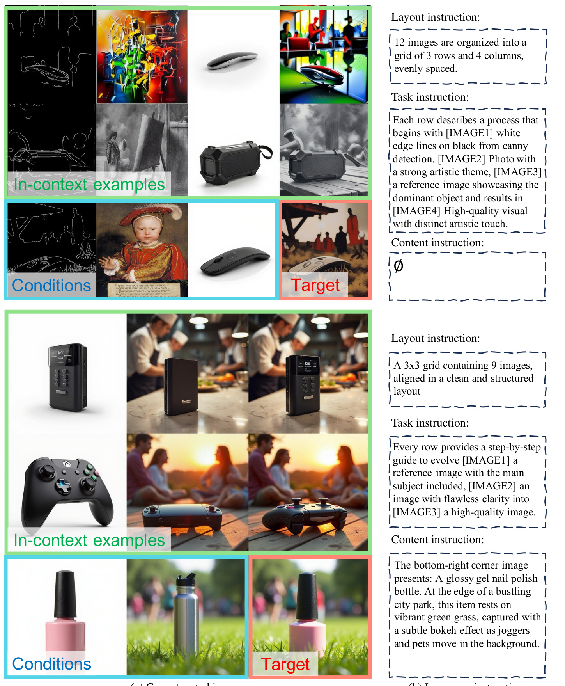図13の読み解き方
図13は、2つの異なるタスク例（上段と下段）について、それぞれ以下を示しています：
- 左側 (a) 連結された画像 (Concatenated images): モデルに実際に入力される画像群の配置を示します。これには、タスクを理解するための「In-context examples（文脈内学習例）」、生成の基となる「Conditions（条件画像）」、そしてモデルが生成すべき「Target（ターゲット領域）」が含まれます。
- 右側 (b) 言語指示 (Language instructions): 左側の画像配置とタスクに対応する、3種類の指示（レイアウト指示、タスク指示、コンテンツ指示）の具体的なテキスト内容を示します。
この左右の対応関係を見ることで、視覚的な入力とそれを解釈するための言語指示がどのように連携するかが分かります。
図13 上段：コンセプト融合タスク (Concept fusion of style, subject, and layout)
この例では、スタイル、被写体、レイアウトといった複数の異なるコンセプト（要素）を賢く融合させて、一つの新しい画像を生成するという高度なタスクが示されています。
- レイアウト指示: 「12枚の画像を3行4列のグリッドに均等に配置する」と明確に指定されています。これにより、入力となる複数の画像（コンテキスト例、条件）と最終的なターゲット画像（この例では右下）の位置関係が一意に定まります。
- タスク指示: 「各行は、[IMAGE1]の白い線画（キャニーエッジ検出結果）から始まり、[IMAGE2]のアーティスティックなテーマを持つ写真、[IMAGE3]の主要被写体を捉えた参照画像を経て、最終的に[IMAGE4]の独特な芸術的タッチを持つ高品質な画像を生成するプロセスを記述する」という、かなり詳細なタスクフローが指示されています。
- コンテンツ指示: 注目すべきは、この例のコンテンツ指示が ∅（空集合の記号） となっている点です。これは、コンテンツ指示が省略されていることを意味します。その理由として、入力されるコンテキスト例や条件画像群（特にIMAGE2やIMAGE3）から、生成すべき画像の内容やスタイルが十分に視覚的に示唆されているため、追加の言語的記述が不要であると判断されたと考えられます。
図13 下段：参照画像を用いた画像編集タスク (Image editing with reference)
こちらの例では、お手本となる参照画像（コンテキスト例）のスタイルや編集方法を学習し、それを条件画像に適用してターゲット画像を生成するという、参照ベースの画像編集タスクが示されています。
- レイアウト指示: 「9枚の画像を含む3x3グリッドで、クリーンで構造化されたレイアウトに配置する」と指定されています。ここでも、画像の配置ルールが明確に定義されています。
- タスク指示: 「各行は、[IMAGE1]の主要被写体を含む参照画像と、[IMAGE2]の申し分のない明瞭さを持つ画像を基に、[IMAGE3]の高品質な画像を生成するための段階的なガイドを提供する」と記述されており、参照情報に基づいた編集プロセスが指示されています。
- コンテンツ指示: 上段の例とは対照的に、こちらの例では具体的なコンテンツ指示が詳細に記述されています。「右下の画像は、光沢のあるジェルネイルポリッシュのボトルを提示する。賑やかな都市公園の端で、このアイテムは鮮やかな緑の草の上に置かれ、ジョギングする人やペットが背景を移動する際の微妙なボケ効果で捉えられている」といった非常に具体的なシーン描写が含まれており、生成画像の詳細な内容が指定されています。
🎨 図13の2つの例を比較することで、タスクの性質や提供される視覚情報の手がかりの強さに応じて、特にコンテンツ指示の有無やその詳細度が柔軟に変化することが明確に見て取れます。VisualClozeフレームワークは、このような適応的で柔軟な指示形式を採用することにより、非常に広範な画像生成のニーズに対して統一的かつ効果的に対応することを目指しているのです。
コンテンツ指示の省略が可能なケースについて
前述の通り、そして図13の上段の例でも示されたように、コンテンツ指示はタスクによっては省略されることがあります。論文では、その代表的な例としてスタイル転送 (style transfer) のようなタスクが挙げられています。
スタイル転送タスクにおける指示
スタイル転送タスクでは、通常、モデルには以下の2種類の主要な画像が入力として与えられます：
- コンテンツ画像 (Content Image): 生成される画像の基本的な構造、構図、主要な被写体などを決定します。「何を描くか」のベースとなります。
- スタイル画像 (Style Image): 生成される画像の色彩感覚、筆致、テクスチャ、全体的な画風などを決定します。「どのように描くか」の美的特徴を提供します。
これらの入力画像（コンテンツ画像とスタイル画像）自体が、「どのような内容の画像を、どのようなスタイルで生成すべきか」という情報、つまり生成ターゲットに関する非常に強い視覚的な手がかりを豊富に提供しています。そのため、多くの場合、追加の言語による詳細なコンテンツ指示は不要となり、省略することが合理的です。
💡 このように、タスクの種類や入力条件の特性に応じて、指示の各要素（特にコンテンツ指示）を柔軟に調整できることが、VisualClozeフレームワークの強みの一つと言えるでしょう。これにより、モデルは必要な情報を効率的に利用し、余計な情報に惑わされることなく、タスクの意図を正確に捉えることができるようになります。
まとめ：指示フォーマットの重要性
このAppendix Aで解説された指示フォーマットは、VisualClozeフレームワークが多様な画像生成タスクを統一的に扱うための根幹をなす設計です。レイアウト指示、タスク指示、そしてコンテンツ指示（必要に応じて）という3つの要素を組み合わせることで、モデルに対して明確かつ柔軟な指示を与えることを可能にしています。
この指示フォーマットを通じて、VisualClozeは言語による指示と視覚的なコンテキスト（お手本となる画像例）を効果的に統合し、まるで人間が新しいタスクを学ぶかのように、モデルが様々な画像生成タスクを「見て学ぶ」ことを目指しています。これは、汎用的な画像生成モデルを実現する上で非常に重要なステップと言えるでしょう。
Appendix B. Fine-tuning FLUX.1-dev Model
このセクションでは、論文で提案されている画像生成フレームワーク VisualCloze を、FLUX.1-Fill-dev というインフィリング（穴埋め）モデルだけでなく、より一般的なテキストから画像を生成するモデルである FLUX.1-dev [33] にも適用するための調整（ファインチューニング）方法について詳しく解説します。
主なポイントは、FLUX.1-dev はインフィリングモデルとは特性が異なるため、VisualCloze の枠組みでうまく機能させるためには、いくつかのカスタマイズされた変更が必要になるという点です。特に、クリーンな（ノイズのない）条件画像と、ノイズが含まれるターゲット画像をどのように処理するかが鍵となります。
FLUX.1-dev の特性と課題
論文では、VisualClozeの手法を主に FLUX.1-Fill-dev (インフィリングモデル) を用いて開発しています。このモデルは、画像の一部分を埋めるというタスクの性質上、VisualClozeが目指す「文脈から画像を生成する」という普遍的な画像生成の目的と一貫性があります。
しかし、FLUX.1-dev は、テキストプロンプトに基づいて画像をゼロから生成する、いわゆる一般的なテキスト画像生成モデルです。そのため、VisualClozeの枠組みで条件画像とターゲット画像を扱う際には、以下のような特有の課題に対応するための工夫が必要になります。
- ✏️ クリーンな条件画像（例：エッジ画像、深度マップなど、ノイズがない状態の入力）の情報を維持する方法。
- ✏️ ノイズのあるターゲット画像（生成過程の途中の、ノイズが乗った状態の出力）を適切に扱う方法。
FLUX.1-dev ファインチューニング戦略
FLUX.1-dev を VisualCloze に適応させるための具体的な変更点は以下の通りです。
🖼️ 画像の連結と条件領域の潜在表現維持
まず、インフィリングモデルと同様に、入力となる複数の画像（条件画像や文脈例）をグリッドレイアウトで連結します。ここまでは FLUX.1-Fill-dev と同様のアプローチです。
⇩ (グリッド状に配置)
連結画像
重要な違いは、サンプリングプロセス（画像を徐々に生成していく過程）全体を通して、条件に対応する領域の潜在埋め込み (latent embeddings) を常にクリーンな（ノイズがない）状態で保持する点です。
潜在埋め込み (Latent Embeddings) とは？
画像を直接ピクセルデータで扱うのではなく、より低次元で意味的な情報を捉えた表現に変換したものです。拡散モデルなどでは、この潜在空間でノイズを除去したり、情報を付加したりして画像を生成します。
この戦略は、画像サンプリング処理の変更を必要とします。なぜなら、ベースとなる FLUX.1-Fill-dev は入力としてノイズのある潜在埋め込みを期待するのに対し、FLUX.1-dev では条件部分はクリーンに保つ必要があるためです。
📊 adaLN-Zero ブロックにおける平均・シフトパラメータの分離計算
次に、モデルの構成要素である adaLN-Zero ブロック [48] の扱いです。これは、適応的レイヤー正規化（Adaptive Layer Normalization）の一種で、条件情報をネットワークに注入する役割を果たします。
adaLN-Zero ブロックとは？
adaLN-Zero は、Transformerベースのモデル（FLUXモデルもこれに該当）でよく用いられる部品です。タイムステップ \(t\) や条件付けテキストなどの外部情報を元に、各層の正規化処理を適応的に調整するためのスケール（\(\gamma\)）とシフト（\(\beta\)）パラメータを生成します。これにより、モデルは生成プロセスの各段階や入力条件に応じて柔軟に動作を変えることができます。"Zero" と付いているのは、初期状態では残差接続を介して情報をそのまま流すように初期化されるため、学習を安定させる効果が期待されるからです。
この adaLN-Zero ブロックにおいて、クリーンな条件領域とノイズのあるターゲット領域に対して、それぞれ個別の平均 (mean) とシフト (shift) パラメータを計算することが極めて重要です。
具体的には、以下のようにパラメータを計算します：
クリーン条件領域
タイムステップ \(T = 0\) を adaLN-Zero に入力して計算します。
\( \text{mean}_{\text{cond}}, \text{shift}_{\text{cond}} = \text{adaLN-Zero}(T=0) \)
💡 \(T=0\) はノイズがない状態を意味します。
ノイズターゲット領域
現在のサンプリングステップにおけるタイムステップ \(T = t\) を adaLN-Zero に入力して計算します。
\( \text{mean}_{\text{target}}, \text{shift}_{\text{target}} = \text{adaLN-Zero}(T=t) \)
💡 \(t\) はサンプリングプロセスが進むにつれて 0 から 1 へと徐々に増加し、ノイズレベルの減少に対応します。
タイムステップ \(t\) とは、拡散モデルにおける生成プロセスの「時間」のようなものです。初期状態 (\(t \approx 1\)) では画像はほぼ完全なノイズですが、\(t\) が 0 に近づくにつれて徐々にノイズが取り除かれ、最終的な画像が現れます。
この戦略は、FLUX.1-dev の事前学習ドメイン (pre-training domain) との整合性を保つために重要です。事前学習では、異なるノイズレベル（異なる \(t\) の値）が、それぞれ異なる平均とシフトのパラメータに対応するように学習されているため、この性質を利用するのです。
図14の解説: 分離戦略による視覚的忠実度の向上
この「平均とシフトの分離計算」戦略が、生成される画像の視覚的な忠実度 (visual fidelity) を保証することを示しているのが、論文中の図14です。
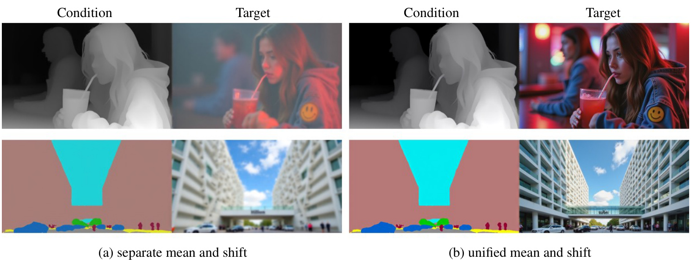図14の見方
この図は、2つの異なる画像生成タスク（上の段は深度マップからの画像生成、下の段はセグメンテーションマップからの画像生成）において、「平均とシフトの分離戦略」を使った場合と使わなかった場合の結果を比較しています。
(a) separate mean and shift (提案戦略)
条件領域 (Condition) とターゲット領域 (Target) に対して、それぞれ適切なタイムステップ（条件は \(T=0\)、ターゲットは \(T=t\)）を用いて adaLN-Zero のパラメータを計算した場合です。
結果: 生成されたターゲット画像は鮮明で高品質です。条件画像の構造や詳細がよく反映されています。
(b) unified mean and shift (比較対象)
条件領域とターゲット領域で平均とシフトのパラメータを分離せず、統一的に扱った（例えば、両方とも \(T=t\) を使うなど）場合です。
結果: 生成されたターゲット画像はぼやけていたり、不自然なアーティファクトが見られたりと、品質が著しく低下しています。
📌 結論: 図14は、条件領域とターゲット領域で adaLN-Zero のパラメータ計算を分離する戦略が、FLUX.1-dev で高品質な条件付き画像生成を行う上で不可欠であることを視覚的に示しています。
このセクションのまとめ
FLUX.1-dev のような一般的なテキスト画像生成モデルを VisualCloze の枠組みでファインチューニングする際には、インフィリングモデルとは異なるアプローチが必要です。
- 戦略1 条件領域の潜在表現をクリーンに保つ。
- 戦略2 adaLN-Zero ブロックで、条件領域 (\(T=0\)) とターゲット領域 (\(T=t\)) の平均・シフトパラメータを分離して計算する。
これらの工夫により、FLUX.1-dev の強力な生成能力を活かしつつ、VisualCloze の多様なタスクに対応できるようになります。
Appendix C. Evaluation Metrics
このセクションでは、本論文で提案された画像生成モデルや比較対象のモデルの性能を評価するために用いられた様々な評価指標 (Evaluation Metrics) について詳しく解説します。画像生成タスクは多岐にわたるため、それぞれのタスク特性に応じた適切な評価指標が用いられています。大きく分けて、条件付き画像生成、被写体駆動型画像生成、スタイル変換の3つのカテゴリで評価が行われます。
このセクションの目的
論文で提案された手法の有効性を客観的に示すために、どのような基準で「良い」生成結果と判断したのか、その具体的なものさし（評価指標）を明らかにすることです。これにより、他の研究との比較も可能になります。
C.1. Conditioning Generation (条件付き画像生成)
条件付き画像生成タスク（例：Cannyエッジ画像から写真生成、深度マップから写真生成など）や画像修復タスク（例：画像のボケ除去）における生成画像の品質を評価します。評価の観点は主に以下の3つです。
- 🕹️ Controllability (制御性)
- 🖼️ Generation quality (生成品質)
- 📝 Text consistency (テキスト整合性)
🕹️ Controllability (制御性)
入力された条件（例：エッジ、深度情報）と、生成された画像から抽出される条件がどれだけ一致しているかを測定します。つまり、モデルが与えられた条件をどれだけ忠実に守って画像を生成できたかを示します。
具体的な指標
- Canny-to-image (エッジからの画像生成):
F1 Score を計算します。
F1 Score は、適合率 (Precision) と再現率 (Recall) の調和平均です。値が高いほど、入力されたエッジ情報を正確に再現できていることを意味します。
\( F_1 = 2 \cdot \frac{\text{Precision} \cdot \text{Recall}}{\text{Precision} + \text{Recall}} \)
[入力エッジ] [生成画像から抽出したエッジ] - Depth-to-image (深度からの画像生成):
RMSE (Root Mean Square Error) を計算します。
RMSE は、入力された深度マップと生成画像から推定された深度マップの間のピクセルごとの誤差の平均です。値が低いほど、深度情報を正確に再現できていることを意味します。
\( \text{RMSE} = \sqrt{\frac{1}{n}\sum_{i=1}^{n}(y_i - \hat{y}_i)^2} \)
ここで、\(y_i\) は真の深度値、\(\hat{y}_i\) は予測された深度値です。
[入力深度マップ] [生成画像から推定した深度マップ] - Deblurring (ボケ除去):
RMSE を元画像と復元画像の間の差で測定します。
値が低いほど、ボケ除去が効果的で元画像に近いクリアな画像が復元されたことを示します。
[元画像] [ボケ除去後の画像]
🖼️ Generation quality (生成品質)
生成された画像自体の視覚的な品質を評価します。
具体的な指標
-
FID (Fréchet Inception Distance) [23]
生成された画像の集合と実際の画像の集合の特徴量分布間の距離を測ります。低いほど、生成画像が実画像に近いとされます。
実画像群の分布 生成画像群の分布 -
SSIM (Structural Similarity Index)
2つの画像の構造的な類似性を評価する指標です。輝度、コントラスト、構造の3つの要素を比較し、-1から1の間の値を取ります。1に近いほど、知覚的に類似しているとされます。
-
MANIQA (Multi-dimension Attention Network for No-Reference Image Quality Assessment) [75] と MUSIQ (Multi-Scale Image Quality Transformer) [30]
これらは参照画像なしで画質を評価する深層学習ベースの手法です。人間の知覚に近い画質スコアを予測します。（論文ではMAN-IQA [75]とMANIQA [75]の言及ですが、関連手法としてMUSIQ [30]も挙げられています。）
📝 Text consistency (テキスト整合性)
生成された画像が、入力されたテキストプロンプト（指示文）の内容とどれだけ意味的に一致しているかを評価します。
具体的な指標
-
CLIP (Contrastive Language-Image Pre-training) [49] を用いた評価
CLIPモデルは、画像とその説明文を同じ特徴空間に写像することができます。この性質を利用し、生成画像から抽出した画像特徴と、テキストプロンプトから抽出したテキスト特徴の間の類似度（通常はコサイン類似度）を計算します。高いほど、画像とテキストが意味的に整合していることを示します。
テキストプロンプト 生成画像
C.2. Subject Driven Generation (被写体駆動型画像生成)
特定の被写体（例：人物、物体）のアイデンティティを保ったまま新しい画像を生成するタスクの性能を評価します。この評価は、DreamBooth [54] や BLIP-Diffusion [36] といった先行研究の手法に倣っています。
評価のポイント
「参照する被写体の特徴をどれだけ忠実に再現できているか」と「テキスト指示にどれだけ従っているか」の2点が重要になります。
DINOv2 [47] スコア
参照被写体の画像と生成された画像の間の整合性を測定します。具体的には、自己教師あり学習モデルであるDINOv2を用いて各画像から特徴ベクトルを抽出し、それらの間のコサイン類似度を計算します。高いほど、被写体の特徴が維持されていることを示します。
(DINOv2特徴の類似度)
CLIP-I (CLIP Image similarity) [49] スコア
こちらも参照被写体の画像と生成された画像の間の整合性を測定しますが、CLIPモデルの画像エンコーダを用います。両画像から抽出されたCLIP画像埋め込み間のCLIPスコア（コサイン類似度）を計算します。高いほど、視覚的な特徴が似ていることを示します。
(CLIP画像埋め込みの類似度)
CLIP-T (CLIP Text similarity) [49] スコア
生成された画像と、その生成に使用されたテキストプロンプトとの間の整合性を測定します。CLIPモデルを用いて、生成画像の画像埋め込みとテキストプロンプトのテキスト埋め込み間のCLIPスコア（コサイン類似度）を計算します。高いほど、画像がテキスト指示に合致していることを示します。
(CLIPテキスト・画像埋め込みの類似度)
C.3. Style Transfer (スタイル変換)
ある画像（コンテンツ画像）の内容を保ちつつ、別の画像（スタイル参照画像）の画風やスタイルを適用するタスクの性能を評価します。この評価は、StyleDrop [56] という先行研究の手法に倣っています。
Text consistency (テキスト整合性)
生成された画像が、与えられたテキストプロンプト（通常はコンテンツの内容を指定）と意味的にどれだけ一致しているかを評価します。
測定方法
CLIP [49]モデルを使用して、生成画像の画像埋め込みとテキストプロンプトのテキスト埋め込みを抽出します。これらの埋め込み間のコサイン類似度を計算します。高いほど、テキスト指示に忠実であることを示します。
[生成画像のCLIP埋め込み]
コサイン類似度
Style alignment (スタイル整合性) / Style consistency (スタイル一貫性)
生成された画像が、スタイル参照画像の画風やスタイルをどれだけ忠実に再現できているかを評価します。（論文中では "style alignment" と "style consistency" の両方の用語が使われていますが、ここでは同じ意味で捉えられます。）
測定方法
CLIP [49]モデルを使用して、生成画像の画像埋め込みとスタイル参照画像の画像埋め込みを抽出します。これらの埋め込み間のコサイン類似度を計算します。高いほど、スタイルがよく再現されていることを示します。
[生成画像のCLIP埋め込み]
コサイン類似度
注意点：両指標のバランス
テキスト整合性とスタイル整合性は同時に考慮する必要があります。なぜなら、モデルが「崩壊 (collapse)」してしまうと、スタイル整合性のスコアが1.0（最大値）に達してしまうことがあるからです。
モデルの崩壊とは？ 🤔
モデルがテキストの指示を完全に無視し、スタイル参照画像をそのままコピーして合成画像として出力してしまう状態を指します。この場合、生成画像とスタイル参照画像は完全に一致するため、スタイル整合性は1.0になりますが、テキストの内容は反映されていないため、望ましい結果ではありません。
(スタイル整合性 = 1.0, テキスト整合性 = 低い)
したがって、両方の指標が高い値を示すことが理想的です。
図13. 連結画像のレイアウト、タスクの意図、ターゲット画像のコンテンツに関するプロンプトを含む言語指示の例。(a) 連結画像 (b) 言語指示
図13の解説
この図は、VisualClozeフレームワークで用いられる言語指示の例を示しています。これらの指示は、複数の画像をどのように配置するか (layout of the concatenated image)、どのようなタスクを実行するか (task intent)、そして生成すべき目標画像の具体的な内容 (content of the target image) をモデルに伝えます。
- (a) Concatenated images: 複数の画像（コンテキスト例やクエリ画像）がグリッド状に配置された状態を示します。
- (b) Language instructions: (a)の画像群に対する言語的な指示です。例えば、上段の例ではスタイルの融合、被写体の融合、レイアウトの融合といった複雑なタスクを指示し、下段の例では参照画像を用いた画像編集タスクを指示しています。これらの指示によって、モデルは実行すべきタスクを理解します。
評価指標の文脈では、これらの言語指示（特にテキストプロンプト）と生成された画像の整合性 (Text consistency) が重要な評価項目となります。
図14. FLUX.1-devのファインチューニングにおける平均とシフトの分離の効果。
図14の解説
この図は、Appendix Bで説明されているFLUX.1-devモデルのファインチューニング戦略に関するものです。具体的には、adaLN-Zeroブロックにおいて、条件画像のクリーンな領域とノイズが付加されたターゲット画像の領域に対して、平均 (mean) とシフト (shift) のパラメータを分離して計算することの効果を示しています。
この図は直接的には評価指標の解説ではありませんが、モデルのアーキテクチャや学習戦略が最終的な生成画像の品質に影響を与え、それが評価指標のスコアに反映されることを示唆しています。FLUX.1-devをファインチューニングする際に、この分離戦略を用いることで、より忠実度の高い画像生成が可能になることを示しており、これは例えば「生成品質」の指標向上に繋がる可能性があります。